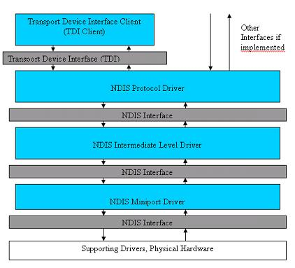

WDM传输设备接口
理论：
本篇的题目有点容易让人误解。出于演示目的，我们写一个TDI客户端，但这并不是我们本篇的目的所在。本篇意在进一步探究怎样处理irp和怎样与之交互。本篇将会介绍怎样排队和处理要取消的IRP. 本篇真正的题目应该是“IRP处理介绍“，然而它不是一个非常引人注意的名字。并且我们的这个题目并不完全是一个谎言，因为我们会把TDI客户端驱动作为一个演示实现。所以我们不得不介绍一下这部分的实现。这个例子是一个非常简单的客户端/服务器通讯的程序，我们将通过它来揭示IRP的处理。
套接字回顾
我们开始介绍的部分或许你已经很清楚，如果你不太了解的话，请阅读相关的文章。即便这样，我也提供了一个根据例子源程序来快速的回顾下如何实现套接字。
什么是IP?
IP或者“互联网协议”的本质是在两台机器之间用来发送数据或者包的协议。这个协议不需要任何的设置，仅仅需要网络上的每台机器有一个唯一的“IP地址“。这个“IP地址“被用来在通讯终端之间路由数据包。这个协议提供了路由功能，但是没有可靠性。仅仅依赖IP来发送数据包，会造成数据包被破坏、颠倒次序和不完整。然而在IP之上的其他协议弥补了这些缺陷。IP层位于OSI模型中的网络层。
什么是TCP？
TCP是指“传输控制协议“。它位于”IP“协议的上层。因此，我们通常讲的TCP/IP就是指的他们两个。”IP“层提供路由功能，”TCP“层提供可靠的，顺序无错的数据传送。为了区分机器上的多个TCP传输，每个TCP提供了一个唯一的TCP端口号。在这种方式下，多个应用程序或者甚至是同一个应用程序都可以打开一个通讯通路，底层的通讯可以在各个终端之间正确的路由数据。”TCP“协议为与OSI模型的传输层。后面，还有像FTP,HTTP等等的协议位于tcp协议的上层。这些协议位于OSI模型的应用层。
协议层
从某种意义上讲，协议栈中的任何部分都可以被一个等价的协议替换。例如，如果FTP需要可靠的传输和路由，那么把它放到能够提供这些功能的协议的上层，它仍然可以工作。在那个例子里，如果一个应用程序使用”SPX”代替“TCP/IP”，他不会产生不同。换句话说，如果“TCP”或者一些”TCP”的实现位于像”ipx“这样不可靠的协议的上层，它也可以工作。可以工作的原因很明显是取决于上层协议对于实际执行和底层协议的内部工作的依赖程度。
什么是套接字？
套接字通常是指被一个套接字库实现的通讯终端。套接字库API是实现用户模式应用程序最简单的办法。Socket API种类很少，我们在windows下使用”WINSOCK”.有一些WINSOCK是兼容的（我曾经实现了一个winsock应用，可以在unix和windows nt下编译，只有很小的冲突，当然这个程序也很简单）还有一些不能直接兼容的。
Socket服务程序
Socket连接的服务端仅仅用于接受进来的连接。每一个连接都有一个独立的句柄，服务程序可以单独的跟每一个客户端进行通讯。下面是概述了通讯中的步骤。
第一步：创建套接字
第一步创建socket. 下面的代码演示了如何创建一个流式socket (TCP/IP)。
hSocket = socket(PF_INET, SOCK_STREAM, 0);
if(hSocket == INVALID_SOCKET)
{
/* Error */
}然后它仅仅返回网络驱动一个句柄，你可以在其他的socket API中使用这个句柄。
第二步: 绑定套接字
第二步是绑定socket到一个TCP/IP端口和IP地址。 下面的代码演示了这个过程。例子中我们创建的套接字，直接使用了一个常数作为套接字端口，然而实际上你应该使用一个宏，把它转换成网络字节顺序。
SockAddr.sin_family = PF_INET;
SockAddr.sin_port = htons(4000); /* Must be in NETWORK BYTE ORDER */
/*
* BIND the Socket to a Port
*/
uiErrorStatus =
bind(hSocket, (struct sockaddr *)&SockAddr;, sizeof(SOCKADDR_IN));
if(uiErrorStatus == INVALID_SOCKET)
{
/* Error */
}这个操作把socket句柄和端口地址绑在了一起。你也可以把IP地址设置为0，让驱动程序绑定任何的IP地址（本地的一个）。你也可以把端口地址设为0来绑定一个随机的端口。通常，服务端都使用固定的端口号，这样方便客户端找到他们，但也有例外。
第三步：侦听
把套接字设置在侦听状态，套接字将能够在有连接呼叫后侦听到连接。参数后面的常数指明了同一时刻套接字允许接受的连接请求数。
if(listen(hSocket, 5) != 0)
{
/* Error */
}第四步: 接受连接
accept API给每一个接收进来的连接提供给你一个新的句柄。下面的代码使用accept的例子。
if((hNewClient = accept(pServerInfo->hServerSocket,
(struct sockaddr *)&NewClientSockAddr, &uiLength)) != INVALID_SOCKET)
{返回的句柄可以用来收发数据。
第五步：关闭套接字
当你用完时，你需要关闭所有的句柄。
closesocket(hNewClient);
使用select api在连接建立和数据到达时可以获得通知，在这里省略了这些细节。如果想进一步了解这些细节，你可以参考MSDN.
SOCKET客户端应用
Socket客户端用来同服务端建立连接和传送数据。下面的步骤说明了两者怎样进行通讯。
第一步：创建套接字
第一步创建套接字。下面的代码演示了如何创建一个流式套接字（TCP/IP）
hSocket = socket(PF_INET, SOCK_STREAM, 0);
if(hSocket == INVALID_SOCKET)
{
/* Error */
}然后它仅仅返回网络驱动一个句柄。我们在其它的socket api中将使用这个句柄。
第二步：连接到服务端
你需要设置服务端的地址和端口号（他们必须是网络字节顺序）来连接到服务端。然后调用connect API建立客户端与服务端的连接。
pClientConnectInfo->SockHostAddress.sin_family = PF_INET;
pClientConnectInfo->SockHostAddress.sin_port =
htons(4000); /* Network Byte Order! */
printf("Enter Host IP Address like: 127.0.0.1\n");
fgets(szHostName, 100, stdin);
pClientConnectInfo->SockHostAddress.sin_addr.s_addr =
inet_addr(szHostName); /* Network Byte Order! */
iRetVal =
connect(hSocket, (LPSOCKADDR)&pClientConnectInfo->SockHostAddress,
sizeof(SOCKADDR_IN));
if(iRetVal == INVALID_SOCKET)
{
/* Error */
}第三步：收发数据
一旦你建立连接，你就可以在你需要的时候使用recv和send api 进行数据传输。
iRetVal = send(hSocket, szBuffer, strlen(szBuffer), 0);
if(iRetVal == SOCKET_ERROR)
{
/* Error */
}
iRetVal = recv(hSocket, szBuffer, 1000, 0);
if(iRetVal == 0 || iRetVal == SOCKET_ERROR)
{
/* Error */
}请注意，在这里的例子中我们收发的数据是字符串，当然也可以是任意的二进制数据。
第四步：关闭socket
当你使用完后，你需要关闭所有的句柄。
closesocket(hSocket);
使用select api在连接建立和数据到达时可以获得通知，在这里省略了这些细节。如果想进一步了解这些细节，你可以参考MSDN.
传输设备接口
前面socket知识的了解是为了让你对TDI API做好准备。传输设备接口是一组用于驱动中, 与传输协议驱动通讯的API. 就像TCP。传输驱动实现了这组API,所以你的驱动能够与它通讯。
这比socket的使用多少有些复杂。MSDN上的文档资料会让你更加迷惑，而不是有帮助。所以我们将一步一步地建立一个客户端连接。一旦你理解了这个，你就能够使用这些API来执行其他的操作，例如创建一个服务端等等。
体系结构
下图描述了TDI/NDIS的关系。通常，TDI是标准的传输协议接口，协议驱动开发者可以在他们的驱动中实现这些。在这种情况下，开发者希望使用他们自己的协议来实现标准的接口，而不是希望每个他们支持的协议各自实现一套接口产生争执。这并不是说这些开发者只能被限定实现TDI..他们可以在他们驱动的顶层实现任何自己想要的接口。我不是一个NDIS方面的专家，所以我简单的说这么多，希望不会出现什么错误！总之，这些典型的信息了解了，是有好处的，但由于我们只是开发TDI客户端驱动，所以这些我们并不需要去理解。
NDIS协议驱动
在这个驱动的下层，协议驱动会调用NDIS接口API，协议驱动的作用也就是实现一个协议，并且与NDIS会话，驱动的上层可以是一个私有的接口或者TDI或者两者都有. 顺便说一下，这里没有“NDIS客户端”。他们不存在。如果其他站点有指出这些驱动是“NDIS客户端”的，那是完全错误的。我曾经跟一个NDIS专家谈到“NDIS客户端”，他们不知道我所说的是什么。
NDIS中间层驱动
下层是中间层驱动，这些驱动可以用作传输，包调度或者数据过滤。
NDIS小端口驱动
最后一层是NDIS小端口驱动，他们直接与NID物理设备通讯。

你可以在msdn上找到更多的关于TDI和NDIS的体系结构信息。
步骤1：打开传输地址
第一步是创建一个“传输地址”的句柄，你需要使用ZwCreateFile 创建一个“传输地址“实例句柄。这个“传输地址“是指本机的ip地址。这不是远程计算机的ip地址。背后的原因是例如，在本机安装了多个NIC, 在本机有多个IP地址的情况下，让你绑定一个指定的IP地址。
你也可以简单的指定为"0.0.0.0" 使用任意一块NIC.
打开句柄的办法对于那些不熟悉驱动开发的人来讲有点生硬，你必须指定“EA"或者"Extedned Attributes"，通过IRP_MJ_CREATE把它传递给驱动。你还可以在打开时，传递参数。除了可以在dos设备名的后面添加外，这时，你也能指定本地端口。如果你是在创建一个服务端，就需要在这个时候指定端口。既然我们仅仅是实现一个客户端连接，因此，我们必须无需关心端口，只要设置为0就行。
下面代码举例说明了怎样打开一个传输地址。
/*
typedef struct _FILE_FULL_EA_INFORMATION {
ULONG NextEntryOffset;
UCHAR Flags;
UCHAR EaNameLength;
USHORT EaValueLength;
CHAR EaName[1];
} FILE_FULL_EA_INFORMATION, *PFILE_FULL_EA_INFORMATION;
*/
NTSTATUS TdiFuncs_OpenTransportAddress(PHANDLE pTdiHandle,
PFILE_OBJECT *pFileObject)
{
NTSTATUS NtStatus = STATUS_INSUFFICIENT_RESOURCES;
UNICODE_STRING usTdiDriverNameString;
OBJECT_ATTRIBUTES oaTdiDriverNameAttributes;
IO_STATUS_BLOCK IoStatusBlock;
char DataBlob[sizeof(FILE_FULL_EA_INFORMATION) +
TDI_TRANSPORT_ADDRESS_LENGTH + 300] = {0};
PFILE_FULL_EA_INFORMATION pExtendedAttributesInformation =
(PFILE_FULL_EA_INFORMATION)&DataBlob;
UINT dwEASize = 0;
PTRANSPORT_ADDRESS pTransportAddress = NULL;
PTDI_ADDRESS_IP pTdiAddressIp = NULL;
/*
* Initialize the name of the device to be opened. ZwCreateFile takes an
* OBJECT_ATTRIBUTES structure as the name of the device to open.
* This is then a two step process.
*
* 1 - Create a UNICODE_STRING data structure from a unicode string.
* 2 - Create a OBJECT_ATTRIBUTES data structure from a UNICODE_STRING.
*
*/
RtlInitUnicodeString(&usTdiDriverNameString, L"\\Device\\Tcp");
InitializeObjectAttributes(&oaTdiDriverNameAttributes,
&usTdiDriverNameString,
OBJ_CASE_INSENSITIVE | OBJ_KERNEL_HANDLE,
NULL, NULL);
/*
* The second step is to initialize the Extended Attributes data structure.
*
* EaName = TdiTransportAddress, 0, TRANSPORT_ADDRESS
* EaNameLength = Length of TdiTransportAddress
* EaValueLength = Length of TRANSPORT_ADDRESS
*/
RtlCopyMemory(&pExtendedAttributesInformation->EaName,
TdiTransportAddress,
TDI_TRANSPORT_ADDRESS_LENGTH);
pExtendedAttributesInformation->EaNameLength =
TDI_TRANSPORT_ADDRESS_LENGTH;
pExtendedAttributesInformation->EaValueLength =
TDI_TRANSPORT_ADDRESS_LENGTH +
sizeof(TRANSPORT_ADDRESS) +
sizeof(TDI_ADDRESS_IP);
pTransportAddress =
(PTRANSPORT_ADDRESS)(&pExtendedAttributesInformation->EaName +
TDI_TRANSPORT_ADDRESS_LENGTH + 1);
/*
* The number of transport addresses
*/
pTransportAddress->TAAddressCount = 1;
/*
* This next piece will essentially describe what
* the transport being opened is.
* AddressType = Type of transport
* AddressLength = Length of the address
* Address = A data structure that is essentially
* related to the chosen AddressType.
*/
pTransportAddress->Address[0].AddressType = TDI_ADDRESS_TYPE_IP;
pTransportAddress->Address[0].AddressLength = sizeof(TDI_ADDRESS_IP);
pTdiAddressIp =
(TDI_ADDRESS_IP *)&pTransportAddress->Address[0].Address;
/*
* The TDI_ADDRESS_IP data structure is essentially simmilar to
* the usermode sockets data structure.
* sin_port
* sin_zero
* in_addr
*
*NOTE: This is the _LOCAL ADDRESS OF THE CURRENT MACHINE_ Just as with
* sockets, if you don't care what port you bind this connection to t
* hen just use "0". If you also only have one network card interface,
* there's no reason to set the IP. "0.0.0.0" will simply use the
* current machine's IP. If you have multiple NIC's or a reason to
* specify the local IP address then you must set TDI_ADDRESS_IP
* to that IP. If you are creating a server side component you may
* want to specify the port, however usually to connectto another
* server you really don't care what port the client is opening.
*/
RtlZeroMemory(pTdiAddressIp, sizeof(TDI_ADDRESS_IP));
dwEASize = sizeof(DataBlob);
NtStatus = ZwCreateFile(pTdiHandle, FILE_READ_EA | FILE_WRITE_EA,
&oaTdiDriverNameAttributes,
&IoStatusBlock, NULL, FILE_ATTRIBUTE_NORMAL, 0, FILE_OPEN_IF, 0,
pExtendedAttributesInformation, dwEASize);
if(NT_SUCCESS(NtStatus))
{
NtStatus = ObReferenceObjectByHandle(*pTdiHandle,
GENERIC_READ | GENERIC_WRITE,
NULL,
KernelMode,
(PVOID *)pFileObject, NULL);
if(!NT_SUCCESS(NtStatus))
{
ZwClose(*pTdiHandle);
}
}
return NtStatus;
} 步骤2：打开连接上下文
第二步是打开连接上下文。在你建立的连接中，执行后续的操作会用到这个句柄。这也是由ZwCreateFile完成，也是在相同的设备"\Device\Tcp"上执行。实际上这个设备允许你打开三个不同的句柄。这三个句柄是传输句柄，连接上下文句柄和控制句柄。需要注意一个常犯的错误的是，一个句柄打开成功，但实际上确是一个错误打开的句柄。这是由于他们是由"Extended Attributes"来决定打开哪个句柄的。显然，如果驱动程序不能识别EA（"Extended Attributes"）的值，那么它就会打开一个默认的句柄类型，控制句柄。这是MSDN中关于创建部分的文档描述的。
下面的代码演示了打开一个连接上下文。注意你需要制定一个"CONNECTION_CONTEXT"类型的指针，使用这个指针指向用户定义的数据。后面你会注意到一些事件回调会提供这个指针给你。这也是你可以使用这个上下文值的本质。
NTSTATUS TdiFuncs_OpenConnection(PHANDLE pTdiHandle, PFILE_OBJECT *pFileObject)
{
NTSTATUS NtStatus = STATUS_INSUFFICIENT_RESOURCES;
UNICODE_STRING usTdiDriverNameString;
OBJECT_ATTRIBUTES oaTdiDriverNameAttributes;
IO_STATUS_BLOCK IoStatusBlock;
char DataBlob[sizeof(FILE_FULL_EA_INFORMATION) +
TDI_CONNECTION_CONTEXT_LENGTH + 300] = {0};
PFILE_FULL_EA_INFORMATION pExtendedAttributesInformation =
(PFILE_FULL_EA_INFORMATION)&DataBlob;
UINT dwEASize = 0;
/*
* Initialize the name of the device to be opened. ZwCreateFile
* takes an OBJECT_ATTRIBUTES structure as the name of the device
* to open. This is then a two step process.
*
* 1 - Create a UNICODE_STRING data structure from a unicode string.
* 2 - Create a OBJECT_ATTRIBUTES data structure from a UNICODE_STRING.
*
*/
RtlInitUnicodeString(&usTdiDriverNameString, L"\\Device\\Tcp");
InitializeObjectAttributes(&oaTdiDriverNameAttributes,
&usTdiDriverNameString,
OBJ_CASE_INSENSITIVE | OBJ_KERNEL_HANDLE,
NULL, NULL);
/*
* The second step is to initialize the Extended Attributes data structure.
*
* EaName = TdiConnectionContext, 0, Your User Defined Context Data
* (Actually a pointer to it)
* EaNameLength = Length of TdiConnectionContext
* EaValueLength = Entire Length
*/
RtlCopyMemory(&pExtendedAttributesInformation->EaName,
TdiConnectionContext, TDI_CONNECTION_CONTEXT_LENGTH);
pExtendedAttributesInformation->EaNameLength =
TDI_CONNECTION_CONTEXT_LENGTH;
pExtendedAttributesInformation->EaValueLength =
TDI_CONNECTION_CONTEXT_LENGTH;
/* Must be at least TDI_CONNECTION_CONTEXT_LENGTH */
dwEASize = sizeof(DataBlob);
NtStatus = ZwCreateFile(pTdiHandle,
FILE_READ_EA | FILE_WRITE_EA, &oaTdiDriverNameAttributes,
&IoStatusBlock, NULL,
FILE_ATTRIBUTE_NORMAL, 0, FILE_OPEN_IF, 0,
pExtendedAttributesInformation, dwEASize);
if(NT_SUCCESS(NtStatus))
{
NtStatus = ObReferenceObjectByHandle(*pTdiHandle,
GENERIC_READ | GENERIC_WRITE,
NULL, KernelMode,
(PVOID *)pFileObject, NULL);
if(!NT_SUCCESS(NtStatus))
{
ZwClose(*pTdiHandle);
}
}
return NtStatus;
} 步骤3：关联传输地址和连接上下文
在你执行任何操作之前，你需要关联这两个句柄，传输句柄和连接上下文句柄。这个通过给设备发送一个IOCTL来完成。是否你还记得先前我们是怎样发送IOCTL的？我们需要分配一个IRP,设置参数和发送它到设备。由于TDI头文件提供了宏和其他的函数可以帮助我们简化这个步骤。TdiBuildInternalDeviceControlIrp实际是一个宏，它内部调用了IoBuildDeviceIoControlRequest. 给这个宏的一些参数实际被忽略了，但是对于注释来讲还是有用的（就像提供的IOCTL一样）。这个API很简单，我们为了演示目的使用它。然而使用其它机制来创建IRP，就像IoAllocateIrp，有一些优点，这个将在后面叙述。其他的宏被用于给底层的驱动简单的设置IO_STACK_LOCATION的参数。
这里有一件事情你需要注意，这里跟我们上次谈到的有些不同的是"STATUS_PENDING"。本篇后面将会讨论这个。
下面的代码演示如何使用它。
NTSTATUS TdiFuncs_AssociateTransportAndConnection(HANDLE hTransportAddress,
PFILE_OBJECT pfoConnection)
{
NTSTATUS NtStatus = STATUS_INSUFFICIENT_RESOURCES;
PIRP pIrp;
IO_STATUS_BLOCK IoStatusBlock = {0};
PDEVICE_OBJECT pTdiDevice;
TDI_COMPLETION_CONTEXT TdiCompletionContext;
KeInitializeEvent(&TdiCompletionContext.kCompleteEvent,
NotificationEvent, FALSE);
/*
* The TDI Device Object is required to send these
* requests to the TDI Driver.
*/
pTdiDevice = IoGetRelatedDeviceObject(pfoConnection);
/*
* Step 1: Build the IRP. TDI defines several macros and functions
* that can quickly create IRP's, etc. for variuos purposes.
* While this can be done manually it's easiest to use the macros.
*
* http://msdn.microsoft.com/library/en-us/network/hh/network/
* 34bldmac_f430860a-9ae2-4379-bffc-6b0a81092e7c.xml.asp?frame=true
*/
pIrp = TdiBuildInternalDeviceControlIrp(TDI_ASSOCIATE_ADDRESS,
pTdiDevice, pfoConnection, &TdiCompletionContext.kCompleteEvent,
&IoStatusBlock);
if(pIrp)
{
/*
* Step 2: Add the correct parameters into the IRP.
*/
TdiBuildAssociateAddress(pIrp, pTdiDevice,
pfoConnection, NULL, NULL, hTransportAddress);
NtStatus = IoCallDriver(pTdiDevice, pIrp);
/*
* If the status returned is STATUS_PENDING this means that the IRP
* will not be completed synchronously and the driver has queued the
* IRP for later processing. This is fine but we do not want
* to return this thread, we are a synchronous call so we want
* to wait until it has completed. The EVENT that we provided will
* be set when the IRP completes.
*/
if(NtStatus == STATUS_PENDING)
{
KeWaitForSingleObject(&TdiCompletionContext.kCompleteEvent,
Executive, KernelMode, FALSE, NULL);
/*
* Find the Status of the completed IRP
*/
NtStatus = IoStatusBlock.Status;
}
}
return NtStatus;
} 步骤4：连接
创建一个TCP连接的客户端，我们需要连接。
NTSTATUS TdiFuncs_Connect(PFILE_OBJECT pfoConnection,
UINT uiAddress, USHORT uiPort)
{
NTSTATUS NtStatus = STATUS_INSUFFICIENT_RESOURCES;
PIRP pIrp;
IO_STATUS_BLOCK IoStatusBlock = {0};
PDEVICE_OBJECT pTdiDevice;
TDI_CONNECTION_INFORMATION RequestConnectionInfo = {0};
TDI_CONNECTION_INFORMATION ReturnConnectionInfo = {0};
LARGE_INTEGER TimeOut = {0};
UINT NumberOfSeconds = 60*3;
char cBuffer[256] = {0};
PTRANSPORT_ADDRESS pTransportAddress =(PTRANSPORT_ADDRESS)&cBuffer;
PTDI_ADDRESS_IP pTdiAddressIp;
TDI_COMPLETION_CONTEXT TdiCompletionContext;
KeInitializeEvent(&TdiCompletionContext.kCompleteEvent,
NotificationEvent, FALSE);
/*
* The TDI Device Object is required to send these
* requests to the TDI Driver.
*/
pTdiDevice = IoGetRelatedDeviceObject(pfoConnection);
/*
* Step 1: Build the IRP. TDI defines several macros and functions
* that can quickly create IRP's, etc. for variuos purposes.
* While this can be done manually it's easiest to use the macros.
*
* http://msdn.microsoft.com/library/en-us/network/hh/network/
* 34bldmac_f430860a-9ae2-4379-bffc-6b0a81092e7c.xml.asp?frame=true
*/
pIrp = TdiBuildInternalDeviceControlIrp(TDI_CONNECT, pTdiDevice,
pfoConnection, &TdiCompletionContext.kCompleteEvent,
&IoStatusBlock);
if(pIrp)
{
/*
* Step 2: Add the correct parameters into the IRP.
*/
/*
* Time out value
*/
TimeOut.QuadPart = 10000000L;
TimeOut.QuadPart *= NumberOfSeconds;
TimeOut.QuadPart = -(TimeOut.QuadPart);
/*
* Initialize the RequestConnectionInfo which specifies
* the address of the REMOTE computer
*/
RequestConnectionInfo.RemoteAddress = (PVOID)pTransportAddress;
RequestConnectionInfo.RemoteAddressLength =
sizeof(PTRANSPORT_ADDRESS) + sizeof(TDI_ADDRESS_IP);
/*
* The number of transport addresses
*/
pTransportAddress->TAAddressCount = 1;
/*
* This next piece will essentially describe what the
* transport being opened is.
* AddressType = Type of transport
* AddressLength = Length of the address
* Address = A data structure that is essentially
* related to the chosen AddressType.
*/
pTransportAddress->Address[0].AddressType =
TDI_ADDRESS_TYPE_IP;
pTransportAddress->Address[0].AddressLength =
sizeof(TDI_ADDRESS_IP);
pTdiAddressIp =
(TDI_ADDRESS_IP *)&pTransportAddress->Address[0].Address;
/*
* The TDI_ADDRESS_IP data structure is essentially simmilar
* to the usermode sockets data structure.
* sin_port
* sin_zero
* in_addr
*/
/*
* Remember, these must be in NETWORK BYTE ORDER (Big Endian)
*/
/* Example: 1494 = 0x05D6 (Little Endian) or 0xD605 (Big Endian)*/
pTdiAddressIp->sin_port = uiPort;
/* Example: 10.60.2.159 = 0A.3C.02.9F (Little Endian)
or 9F.02.3C.0A (Big Endian)
*/
pTdiAddressIp->in_addr = uiAddress;
TdiBuildConnect(pIrp, pTdiDevice, pfoConnection, NULL, NULL,
&TimeOut, &RequestConnectionInfo,
&ReturnConnectionInfo);
NtStatus = IoCallDriver(pTdiDevice, pIrp);
/*
* If the status returned is STATUS_PENDING this means
* that the IRP will not be completed synchronously
* and the driver has queued the IRP for later processing.
* This is fine but we do not want to return this thread,
* we are a synchronous call so we want to wait until
* it has completed. The EVENT that we provided will be
* set when the IRP completes.
*/
if(NtStatus == STATUS_PENDING)
{
KeWaitForSingleObject(&TdiCompletionContext.kCompleteEvent,
Executive, KernelMode, FALSE, NULL);
/*
* Find the Status of the completed IRP
*/
NtStatus = IoStatusBlock.Status;
}
}
return NtStatus;
} 步骤5：发送和接收数据
为了发送数据，你只需创建一个TDI_SEND IOCTL，然后把它传送给传输设备。下面的代码实现了数据发送。
NTSTATUS TdiFuncs_Send(PFILE_OBJECT pfoConnection, PVOID pData,
UINT uiSendLength, UINT *pDataSent)
{
NTSTATUS NtStatus = STATUS_INSUFFICIENT_RESOURCES;
PIRP pIrp;
IO_STATUS_BLOCK IoStatusBlock = {0};
PDEVICE_OBJECT pTdiDevice;
PMDL pSendMdl;
TDI_COMPLETION_CONTEXT TdiCompletionContext;
KeInitializeEvent(&TdiCompletionContext.kCompleteEvent,
NotificationEvent, FALSE);
/*
* The TDI Device Object is required to
* send these requests to the TDI Driver.
*/
pTdiDevice = IoGetRelatedDeviceObject(pfoConnection);
*pDataSent = 0;
/*
* The send requires an MDL which is what you may remember from DIRECT_IO.
* However, instead of using an MDL we need to create one.
*/
pSendMdl = IoAllocateMdl((PCHAR )pData, uiSendLength, FALSE, FALSE, NULL);
if(pSendMdl)
{
__try {
MmProbeAndLockPages(pSendMdl, KernelMode, IoModifyAccess);
} __except (EXCEPTION_EXECUTE_HANDLER) {
IoFreeMdl(pSendMdl);
pSendMdl = NULL;
};
if(pSendMdl)
{
/*
* Step 1: Build the IRP. TDI defines several macros and functions
* that can quickly create IRP's, etc. for variuos purposes.
* While this can be done manually it's easiest to use
* the macros.
*/
pIrp = TdiBuildInternalDeviceControlIrp(TDI_SEND,
pTdiDevice, pfoConnection,
&TdiCompletionContext.kCompleteEvent,
&IoStatusBlock);
if(pIrp)
{
/*
* Step 2: Add the correct parameters into the IRP.
*/
TdiBuildSend(pIrp, pTdiDevice, pfoConnection, NULL,
NULL, pSendMdl, 0, uiSendLength);
NtStatus = IoCallDriver(pTdiDevice, pIrp);
/*
* If the status returned is STATUS_PENDING this means that the
* IRP will not be completed synchronously and the driver has
* queued the IRP for later processing. This is fine but we do
* not want to return this not want to return this not want to
* return this to wait until it has completed. The EVENT
* that we providedwill be set when the IRP completes.
*/
if(NtStatus == STATUS_PENDING)
{
KeWaitForSingleObject(&TdiCompletionContext.kCompleteEvent,
Executive, KernelMode, FALSE, NULL);
}
NtStatus = IoStatusBlock.Status;
*pDataSent = (UINT)IoStatusBlock.Information;
/*
* I/O Manager will free the MDL
*
if(pSendMdl)
{
MmUnlockPages(pSendMdl);
IoFreeMdl(pSendMdl);
} */
}
}
}
return NtStatus;
} 同样的使用TDI_RECEIVE来完成数据接收。然而我们却没有用它来实现。实际上，如果你注意到，你可以创建回调来通知你数据或者其他事件什么时候到达。这就是我们所做的。我实现了一个API包装函数来创建任意的事件句柄。如下：
NTSTATUS TdiFuncs_SetEventHandler(PFILE_OBJECT pfoTdiFileObject,
LONG InEventType, PVOID InEventHandler, PVOID InEventContext)
{
NTSTATUS NtStatus = STATUS_INSUFFICIENT_RESOURCES;
PIRP pIrp;
IO_STATUS_BLOCK IoStatusBlock = {0};
PDEVICE_OBJECT pTdiDevice;
LARGE_INTEGER TimeOut = {0};
UINT NumberOfSeconds = 60*3;
TDI_COMPLETION_CONTEXT TdiCompletionContext;
KeInitializeEvent(&TdiCompletionContext.kCompleteEvent,
NotificationEvent, FALSE);
/*
* The TDI Device Object is required to send these
* requests to the TDI Driver.
*/
pTdiDevice = IoGetRelatedDeviceObject(pfoTdiFileObject);
/*
* Step 1: Build the IRP. TDI defines several macros and functions
* that can quickly create IRP's, etc. for variuos purposes.
* While this can be done manually it's easiest to use the macros.
*
*/
pIrp = TdiBuildInternalDeviceControlIrp(TDI_SET_EVENT_HANDLER,
pTdiDevice, pfoConnection, &TdiCompletionContext.kCompleteEvent,
&IoStatusBlock);
if(pIrp)
{
/*
* Step 2: Set the IRP Parameters
*/
TdiBuildSetEventHandler(pIrp, pTdiDevice, pfoTdiFileObject,
NULL, NULL, InEventType, InEventHandler, InEventContext);
NtStatus = IoCallDriver(pTdiDevice, pIrp);
/*
* If the status returned is STATUS_PENDING this means that
* the IRP will not be completed synchronously and the driver has
* queued the IRP for later processing. This is fine but we do not
* want to return this thread, we are a synchronous call so we want
* to wait until it has completed. The EVENT that we provided
* will be set when the IRP completes.
*/
if(NtStatus == STATUS_PENDING)
{
KeWaitForSingleObject(&TdiCompletionContext.kCompleteEvent,
Executive, KernelMode, FALSE, NULL);
/*
* Find the Status of the completed IRP
*/
NtStatus = IoStatusBlock.Status;
}
}
return NtStatus;
} 使用这个函数实现回调的代码如下：
NtStatus = TdiFuncs_SetEventHandler(
pTdiExampleContext->TdiHandle.pfoTransport,
TDI_EVENT_RECEIVE,
TdiExample_ClientEventReceive,
(PVOID)pTdiExampleContext);
NTSTATUS TdiExample_ClientEventReceive(PVOID TdiEventContext,
CONNECTION_CONTEXT ConnectionContext,
ULONG ReceiveFlags,
ULONG BytesIndicated,
ULONG BytesAvailable,
ULONG *BytesTaken,
PVOID Tsdu,
PIRP *IoRequestPacket)
{
NTSTATUS NtStatus = STATUS_SUCCESS;
UINT uiDataRead = 0;
PTDI_EXAMPLE_CONTEXT pTdiExampleContext =
(PTDI_EXAMPLE_CONTEXT)TdiEventContext;
PIRP pIrp;
DbgPrint("TdiExample_ClientEventReceive 0x%0x, %i, %i\n",
ReceiveFlags, BytesIndicated, BytesAvailable);
*BytesTaken = BytesAvailable;
/*
* This implementation is extremely simple. We do not queue
* data if we do not have an IRP to put it there. We also
* assume we always get the full data packet sent every recieve.
* These are Bells and Whistles that can easily be added to
* any implementation but would help to make the implementation
* more complex and harder to follow the underlying idea. Since
* those essentially are common-sense add ons they are ignored and
* the general implementation of how to Queue IRP's and
* recieve data are implemented.
*
*/
pIrp = HandleIrp_RemoveNextIrp(pTdiExampleContext->pReadIrpListHead);
if(pIrp)
{
PIO_STACK_LOCATION pIoStackLocation =
IoGetCurrentIrpStackLocation(pIrp);
uiDataRead =
BytesAvailable > pIoStackLocation->Parameters.Read.Length ?
pIoStackLocation->Parameters.Read.Length : BytesAvailable;
pIrp->Tail.Overlay.DriverContext[0] = NULL;
RtlCopyMemory(pIrp->AssociatedIrp.SystemBuffer, Tsdu, uiDataRead);
pIrp->IoStatus.Status = NtStatus;
pIrp->IoStatus.Information = uiDataRead;
IoCompleteRequest(pIrp, IO_NETWORK_INCREMENT);
}
/*
* The I/O Request can be used to recieve the rest of the data.
* We are not using it in this example however and will actually
* be assuming that we always get all the data.
*
*/
*IoRequestPacket = NULL;
return NtStatus;
} 不要对HandleIrp_RemoveNextIrp产生恐惧，我们会在本篇后面部分讲怎样排队IRP请求。
步骤6：断开连接
这里没有特别的，就是实现TDI_DISCONNECT IOCTL来断开连接。
NTSTATUS TdiFuncs_Disconnect(PFILE_OBJECT pfoConnection)
{
NTSTATUS NtStatus = STATUS_INSUFFICIENT_RESOURCES;
PIRP pIrp;
IO_STATUS_BLOCK IoStatusBlock = {0};
PDEVICE_OBJECT pTdiDevice;
TDI_CONNECTION_INFORMATION ReturnConnectionInfo = {0};
LARGE_INTEGER TimeOut = {0};
UINT NumberOfSeconds = 60*3;
TDI_COMPLETION_CONTEXT TdiCompletionContext;
KeInitializeEvent(&TdiCompletionContext.kCompleteEvent,
NotificationEvent, FALSE);
/*
* The TDI Device Object is required to send
* these requests to the TDI Driver.
*/
pTdiDevice = IoGetRelatedDeviceObject(pfoConnection);
/*
* Step 1: Build the IRP. TDI defines several macros and functions
* that can quickly create IRP's, etc. for variuos purposes.
* While this can be done manually it's easiest to use the macros.
*
*/
pIrp = TdiBuildInternalDeviceControlIrp(TDI_DISCONNECT, pTdiDevice,
pfoConnection, &TdiCompletionContext.kCompleteEvent,
&IoStatusBlock);
if(pIrp)
{
/*
* Step 2: Add the correct parameters into the IRP.
*/
/*
* Time out value
*/
TimeOut.QuadPart = 10000000L;
TimeOut.QuadPart *= NumberOfSeconds;
TimeOut.QuadPart = -(TimeOut.QuadPart);
TdiBuildDisconnect(pIrp, pTdiDevice, pfoConnection, NULL, NULL,
&TimeOut, TDI_DISCONNECT_ABORT, NULL,
&ReturnConnectionInfo);
NtStatus = IoCallDriver(pTdiDevice, pIrp);
/*
* If the status returned is STATUS_PENDING this means that the
* IRP will not be completed synchronously and the driver has
* queued the IRP for later processing. This is fine but we do
* not want to return this thread, we are a synchronous call so
* we want to wait until it has completed. The EVENT that
* we provided will be set when the IRP completes.
*/
if(NtStatus == STATUS_PENDING)
{
KeWaitForSingleObject(&TdiCompletionContext.kCompleteEvent,
Executive, KernelMode, FALSE, NULL);
/*
* Find the Status of the completed IRP
*/
NtStatus = IoStatusBlock.Status;
}
}
return NtStatus;
} 步骤7：分离句柄关联
这个非常简单，我们只要实现另外的IOCTL调用就行了，如下：
NTSTATUS TdiFuncs_DisAssociateTransportAndConnection(PFILE_OBJECT pfoConnection)
{
NTSTATUS NtStatus = STATUS_INSUFFICIENT_RESOURCES;
PIRP pIrp;
IO_STATUS_BLOCK IoStatusBlock = {0};
PDEVICE_OBJECT pTdiDevice;
TDI_COMPLETION_CONTEXT TdiCompletionContext;
KeInitializeEvent(&TdiCompletionContext.kCompleteEvent,
NotificationEvent, FALSE);
/*
* The TDI Device Object is required to send these requests to the TDI Driver.
*
*/
pTdiDevice = IoGetRelatedDeviceObject(pfoConnection);
/*
* Step 1: Build the IRP. TDI defines several macros and
* functions that can quickly create IRP's, etc. for
* variuos purposes. While this can be done manually
* it's easiest to use the macros.
*
*/
pIrp = TdiBuildInternalDeviceControlIrp(TDI_DISASSOCIATE_ADDRESS,
pTdiDevice, pfoConnection,
&TdiCompletionContext.kCompleteEvent, &IoStatusBlock);
if(pIrp)
{
/*
* Step 2: Add the correct parameters into the IRP.
*/
TdiBuildDisassociateAddress(pIrp, pTdiDevice,
pfoConnection, NULL, NULL);
NtStatus = IoCallDriver(pTdiDevice, pIrp);
/*
* If the status returned is STATUS_PENDING this means that the
* IRP will not be completed synchronously and the driver has
* queued the IRP for later processing. This is fine but we
* do not want to return this thread, we are a synchronous call
* so we want to wait until it has completed. The EVENT that we
* provided will be set when the IRP completes.
*/
if(NtStatus == STATUS_PENDING)
{
KeWaitForSingleObject(&TdiCompletionContext.kCompleteEvent,
Executive, KernelMode, FALSE, NULL);
/*
* Find the Status of the completed IRP
*/
NtStatus = IoStatusBlock.Status;
}
}
return NtStatus;
} 步骤8：关闭句柄
这个函数被两个句柄调用，传输句柄和上下文句柄。
NTSTATUS TdiFuncs_CloseTdiOpenHandle(HANDLE hTdiHandle,
PFILE_OBJECT pfoTdiFileObject)
{
NTSTATUS NtStatus = STATUS_SUCCESS;
/*
* De-Reference the FILE_OBJECT and Close The Handle
*/
ObDereferenceObject(pfoTdiFileObject);
ZwClose(hTdiHandle);
return NtStatus;
}其他资源
一旦你熟悉了，TDI接口就变得简单了。当写驱动时，最大的事情就是处理IRP。TDI似乎比socket有些复杂，但是它是内核接口。
如果曾经研究过TDI或者NDIS,你大概进入过Thomas Divine. 如果你想购买复杂的TDI或者NDIS示例，你可以找他们，或者他公司网站上的其他资源。在上面你也可以找到其他不同网站的指南。
IRP处理
下篇文章将粗微的谈到一些IRP的基本概念和怎样处理他们。实际上那里描述的东西有一些大的缝隙，为了保持下篇文章简单，所以在本篇我们将加快步伐，尽可能多的去填充这些缝隙。在这时，正面的揭示这些给驱动开发者，我们能非常简单的做这个。然而这里有大量的信息，并不是所有的都在示例代码中体现出来了。你需要自己试验这些IRP的处理，这是开发驱动的根本部分。
驱动请求
当写驱动的时候，有两次不同的揭示IRP. 即：发给你自己驱动的请求和你创建的IRP,发送给在其他驱动的请求两种。我记得，有一个驱动栈，栈里的每一个驱动在IRP中都有自己的栈区域。每次一个IRP沿着栈向下发送，IRP的当前栈区域是优先的。当它到达你的驱动时，你可以有少量的选择。
前进和遗忘
你可以使用IoCallDriver使IRP向前到栈中的下一个驱动。这是我们在其它驱动指南中的做法。我们向前了IRP并且忘记它。可是这里有一个问题，我们并没有考虑到STATUS_PENDING的情况。STATUS_PENDING是实现异步操作的一个方法。由底层驱动通知调用者，他们没有完成这个IRP。或许他们也正在一个单独的线程中完成这个IRP. 它的规则是如果你返回STATUS_PENDING，你必须在返回之前调用IoMarkIrpPending。如果你已经向前把IRP传给了下一个驱动，现在这仍然是个问题。在调用后，不允许你接触它。所以实际上你有两个选择。
IoMarkIrpPending(Irp);
IoCallDriver(pDeviceObject, Irp);
return STATUS_PENDING;第二个选择是设置一个完成例程。你应该记得在第四篇文章中的代码，我们使用完成例程通过返回STATUS_MORE_PROCESSING_REQUIRED而不是STATUS_SUCCESS，停止了一个IRP的完成。,
IoSetCompletionRoutine(Irp, CompletionRoutine, NULL, TRUE, TRUE, TRUE);
return IoCallDriver(pDeviceObject, Irp);
NTSTATUS CompletionRoutine(PDEVICE_OBJECT DeviceObject,
PIRP Irp, PVOID Context)
{
if(Irp->PendingReturned)
{
IoMarkIrpPending(Irp);
}
return STATUS_SUCCESS;
} 你可以在这里再一次的停止处理过程，如果你这么做，你需要使用IoMarkIrpPending。这里有个循环逻辑，如果你调用IoMarkIrpPending，那么你必须从你的驱动中返回STATUS_PENDING，如果你从你的驱动中返回STATUS_PENDING，你必须调用IoMarkIrpPending。记住，如果你停止一个完成的处理，那么这就意味着你必须完成它。我们在第四篇就是这么做的。
需要注意一点，如果一个完成例程不提供这些，I/O管理器会把"IoMarkIrpPending"告诉给你。在这个或许你不想去相信的主题中，无论信息是多么分散，你要确信你所做的任何事情都是对的。
向前和投递处理
这和我们在第四篇的处理有些细微的差别。我们需要考虑pending的情况，如果IRP从底层驱动中返回pending的状态，我们需要等待，直到底层驱动完成它。一旦驱动完成，我们需要唤醒原始线程，这样我们就可以处理和完成IRP. 作为一个最佳方式，如果pending状态返回，我们只想设置事件。如果任何事情被同步处理，就不需要增加前面的设置和等待事件。下面是代码示例。
IoSetCompletionRoutine(Irp, CompletionRoutine,
&kCompleteEvent, TRUE, TRUE, TRUE);
NtStatus = IoCallDriver(pDeviceObject, Irp);
if(NtStatus == STATUS_PENDING)
{
KeWaitForSingleObject(&kCompleteEvent,
Executive, KernelMode, FALSE, NULL);
/*
* Find the Status of the completed IRP
*/
NtStatus = IoStatusBlock.Status;
}
/*
* Do Post Processing
*/
IoCompleteRequest(pIrp, IO_NO_INCREMENT);
return NtStatus;
NTSTATUS CompletionRoutine(PDEVICE_OBJECT DeviceObject,
PIRP Irp, PVOID Context)
{
if(Irp->PendingReturned)
{
KeSetEvent(Context, IO_NO_INCREMENT, FALSE);
}
return STATUS_MORE_PROCESSING_REQUIRED;
} 排队和悬而未决
你有权选择排队IRP, 在迟些的时间作处理或者在其他的线程处理。既然你拥有IRP, 当它在你的驱动栈层时，这是被允许的。你需要考虑IRP可以被取消的情况。问题是如果IRP被取消，既然结果将会被扔在一边，你真的不想执行任何处理？另一个问题是我们想要解决的是，如果一个有活动的IRP,他们和一个进程或者线程关联，直到活动的IRP完成，这个进程或者线程才能被完全终止。这是非常狡猾的，对于如何实现，这方面的文档非常少，在这里，我们将给你展示如何实现这些。
夺取你的锁
你需要做的第一件事情就是获取自旋锁保护你的IRP链，这将有助于在你的排队逻辑和取消例程之间同步执行。如果你使用某个系统提供的队列机制，有一种系统的取消自旋锁可以被获取，在一些情况下，是必须的。然而既然取消自旋锁是系统范围的，你所想的也是差不多接近的吗？另外的处理器会获取你的自旋锁，或者获取取消自旋锁吗？最有可能的是它会结束获取取消自旋锁，并且这将成为一种性能打击，在单处理器的机器上，很明显不需要关心你使用哪个自旋锁，但是你应该尝试去实现自己的自旋锁。
设置取消例程
你的取消例程需要获取你的自旋锁来同步执行或者从链中删除IRP. 设置取消例程，如果这个IRP被取消，你会知道并且可以从你的IRP列表中删除。记住，你仍然必须完成这个IRP。
没有其他办法。如果一个IRP被取消，他不会刚好从外面在你的脚下消失。如果是那样，当你在处理这个IRP时，如果它被取消，你会处于巨大的麻烦中。取消例程的作用是当IRP在队列中时，如果取消IRP时没有任何争抢，在任何时候你都可以把它从队列中删除。
检查取消标志
然后你必须检查IRP中的取消标志，如果它没有被取消，你需要调用IoMarkIrpPending以及将IRP排队到你的链表，无论哪种办法，你必须确信从你的驱动中返回了STATUS_PENDING。
如果它已经被取消，我们需要知道它是否调用了你的取消例程。通过把取消例程设置为NULL我们可以做到这点。如果返回值是NULL,那么取消例程被调用。如果返回值非NULL，那么取消例程没有被调用。这意味着在我们设置取消例程之前，它已经被取消。
你现在有两个选择，记住，仅有一个位置可以完成这个IRP. 如果取消例程被调用，那么在取消例程没有完成这个IRP时， 如果它不在你的IRP链中，那么你就可以释放它。如果取消例程已经完成了它，那么你一定不能完成它。如果取消例程没有被调用，那么你必须显式的完成它。不管发生什么事，你一定要记住两件事。第一件事是在你的驱动中某个地方，你必须要完成这个IRP. 第二件事情是记得一定不要完成两次。
同样的事情，当你从IRP链中删除一个IRP时，你需要检查这个IRP是否已经被取消。在删除IRP之前，你也要设置取消例程为NULL. 看下面的代码。
Irp->Tail.Overlay.DriverContext[0] =
(PVOID)pTdiExampleContext->pWriteIrpListHead;
NtStatus = HandleIrp_AddIrp(pTdiExampleContext->pWriteIrpListHead,
Irp, TdiExample_CancelRoutine, TdiExample_IrpCleanUp, NULL);
if(NT_SUCCESS(NtStatus))
{
KeSetEvent(&pTdiExampleContext->kWriteIrpReady,
IO_NO_INCREMENT, FALSE);
NtStatus = STATUS_PENDING;
}
/**********************************************************************
*
* HandleIrp_AddIrp
*
* This function adds an IRP to the IRP List.
*
**********************************************************************/
NTSTATUS HandleIrp_AddIrp(PIRPLISTHEAD pIrpListHead,
PIRP pIrp,
PDRIVER_CANCEL pDriverCancelRoutine,
PFNCLEANUPIRP pfnCleanUpIrp,
PVOID pContext)
{
NTSTATUS NtStatus = STATUS_UNSUCCESSFUL;
KIRQL kOldIrql;
PDRIVER_CANCEL pCancelRoutine;
PIRPLIST pIrpList;
pIrpList = (PIRPLIST)KMem_AllocateNonPagedMemory(sizeof(IRPLIST),
pIrpListHead->ulPoolTag);
if(pIrpList)
{
DbgPrint("HandleIrp_AddIrp Allocate Memory = 0x%0x \r\n", pIrpList);
pIrpList->pContext = pContext;
pIrpList->pfnCleanUpIrp = pfnCleanUpIrp;
pIrpList->pIrp = pIrp;
pIrpList->pfnCancelRoutine = pDriverCancelRoutine;
/*
* The first thing we need to to is acquire our spin lock.
*
* The reason for this is a few things.
*
* 1. All access to this list is synchronized, the obvious reason
* 2. This will synchronize adding this IRP to the
* list with the cancel routine.
*/
KeAcquireSpinLock(&pIrpListHead->kspIrpListLock, &kOldIrql);
/*
* We will now attempt to set the cancel routine which will be called
* when (if) the IRP is ever canceled. This allows us to remove an IRP
* from the queue that is no longer valid.
*
* A potential misconception is that if the IRP is canceled it is no
* longer valid. This is not true the IRP does not self-destruct.
* The IRP is valid as long as it has not been completed. Once it
* has been completed this is when it is no longer valid (while we
* own it). So, while we own the IRP we need to complete it at some
* point. The reason for setting a cancel routine is to realize
* that the IRP has been canceled and complete it immediately and
* get rid of it. We don't want to do processing for an IRP that
* has been canceled as the result will just be thrown away.
*
* So, if we remove an IRP from this list for processing and
* it's canceled the only problem is that we did processing on it.
* We complete it at the end and there's no problem.
*
* There is a problem however if your code is written in a way
* that allows your cancel routine to complete the IRP unconditionally.
* This is fine as long as you have some type of synchronization
* since you DO NOT WANT TO COMPLETE AN IRP TWICE!!!!!!
*/
IoSetCancelRoutine(pIrp, pIrpList->pfnCancelRoutine);
/*
* We have set our cancel routine. Now, check if the IRP has
* already been canceled.
* We must set the cancel routine before checking this to ensure
* that once we queue the IRP it will definately be called if the
* IRP is ever canceled.
*/
if(pIrp->Cancel)
{
/*
* If the IRP has been canceled we can then check if our
* cancel routine has been called.
*/
pCancelRoutine = IoSetCancelRoutine(pIrp, NULL);
/*
* if pCancelRoutine ==
* NULL then our cancel routine has been called.
* if pCancelRoutine !=
* NULL then our cancel routine has not been called.
*
* The I/O Manager will set the cancel routine to NULL
* before calling the cancel routine.
* We have a decision to make here, we need to write the code
* in a way that we only complete and clean up the IRP once.
* We either allow the cancel routine to do it or we do it here.
* Now, we will already have to clean up the IRP here if the
* pCancelRoutine != NULL.
*
* The solution we are going with here is that we will only clean
* up IRP's in the cancel routine if the are in the list.
* So, we will not add any IRP to the list if it has
* already been canceled once we get to this location.
*
*/
KeReleaseSpinLock(&pIrpListHead->kspIrpListLock, kOldIrql);
/*
* We are going to allow the clean up function to complete the IRP.
*/
pfnCleanUpIrp(pIrp, pContext);
DbgPrint("HandleIrp_AddIrp Complete Free Memory = 0x%0x \r\n",
pIrpList);
KMem_FreeNonPagedMemory(pIrpList);
}
else
{
/*
* The IRP has not been canceled, so we can simply queue it!
*/
pIrpList->pNextIrp = NULL;
IoMarkIrpPending(pIrp);
if(pIrpListHead->pListBack)
{
pIrpListHead->pListBack->pNextIrp = pIrpList;
pIrpListHead->pListBack = pIrpList;
}
else
{
pIrpListHead->pListFront = pIrpListHead->pListBack =
pIrpList;
}
KeReleaseSpinLock(&pIrpListHead->kspIrpListLock,
kOldIrql);
NtStatus = STATUS_SUCCESS;
}
}
else
{
/*
* We are going to allow the clean up function to complete the IRP.
*/
pfnCleanUpIrp(pIrp, pContext);
}
return NtStatus;
}
/**********************************************************************
*
* HandleIrp_RemoveNextIrp
*
* This function removes the next valid IRP.
*
**********************************************************************/
PIRP HandleIrp_RemoveNextIrp(PIRPLISTHEAD pIrpListHead)
{
PIRP pIrp = NULL;
KIRQL kOldIrql;
PDRIVER_CANCEL pCancelRoutine;
PIRPLIST pIrpListCurrent;
KeAcquireSpinLock(&pIrpListHead->kspIrpListLock, &kOldIrql);
pIrpListCurrent = pIrpListHead->pListFront;
while(pIrpListCurrent && pIrp == NULL)
{
/*
* To remove an IRP from the Queue we first want to
* reset the cancel routine.
*/
pCancelRoutine = IoSetCancelRoutine(pIrpListCurrent->pIrp, NULL);
/*
* The next phase is to determine if this IRP has been canceled
*/
if(pIrpListCurrent->pIrp->Cancel)
{
/*
* We have been canceled so we need to determine if our
* cancel routine has already been called. pCancelRoutine
* will be NULL if our cancel routine has been called.
* If will not be NULL if our cancel routine has not been
* called. However, we don't care in either case and we
* will simply complete the IRP here since we have to implement at
* least that case anyway.
*
* Remove the IRP from the list.
*/
pIrpListHead->pListFront = pIrpListCurrent->pNextIrp;
if(pIrpListHead->pListFront == NULL)
{
pIrpListHead->pListBack = NULL;
}
KeReleaseSpinLock(&pIrpListHead->kspIrpListLock, kOldIrql);
pIrpListCurrent->pfnCleanUpIrp(pIrpListCurrent->pIrp,
pIrpListCurrent->pContext);
DbgPrint("HandleIrp_RemoveNextIrp Complete Free Memory =
0x%0x \r\n", pIrpListCurrent);
KMem_FreeNonPagedMemory(pIrpListCurrent);
pIrpListCurrent = NULL;
KeAcquireSpinLock(&pIrpListHead->kspIrpListLock,
&kOldIrql);
pIrpListCurrent = pIrpListHead->pListFront;
}
else
{
pIrpListHead->pListFront = pIrpListCurrent->pNextIrp;
if(pIrpListHead->pListFront == NULL)
{
pIrpListHead->pListBack = NULL;
}
pIrp = pIrpListCurrent->pIrp;
KeReleaseSpinLock(&pIrpListHead->kspIrpListLock, kOldIrql);
DbgPrint("HandleIrp_RemoveNextIrp Complete Free Memory = 0x%0x \r\n",
pIrpListCurrent);
KMem_FreeNonPagedMemory(pIrpListCurrent);
pIrpListCurrent = NULL;
KeAcquireSpinLock(&pIrpListHead->kspIrpListLock,
&kOldIrql);
}
}
KeReleaseSpinLock(&pIrpListHead->kspIrpListLock, kOldIrql);
return pIrp;
}
/**********************************************************************
*
* HandleIrp_PerformCancel
*
* This function removes the specified IRP from the list.
*
**********************************************************************/
NTSTATUS HandleIrp_PerformCancel(PIRPLISTHEAD pIrpListHead, PIRP pIrp)
{
NTSTATUS NtStatus = STATUS_UNSUCCESSFUL;
KIRQL kOldIrql;
PIRPLIST pIrpListCurrent, pIrpListPrevious;
KeAcquireSpinLock(&pIrpListHead->kspIrpListLock,
&kOldIrql);
pIrpListPrevious = NULL;
pIrpListCurrent = pIrpListHead->pListFront;
while(pIrpListCurrent && NtStatus == STATUS_UNSUCCESSFUL)
{
if(pIrpListCurrent->pIrp == pIrp)
{
if(pIrpListPrevious)
{
pIrpListPrevious->pNextIrp = pIrpListCurrent->pNextIrp;
}
if(pIrpListHead->pListFront == pIrpListCurrent)
{
pIrpListHead->pListFront = pIrpListCurrent->pNextIrp;
}
if(pIrpListHead->pListBack == pIrpListCurrent)
{
pIrpListHead->pListBack = pIrpListPrevious;
}
KeReleaseSpinLock(&pIrpListHead->kspIrpListLock, kOldIrql);
NtStatus = STATUS_SUCCESS;
/*
* We are going to allow the clean up function to complete the IRP.
*/
pIrpListCurrent->pfnCleanUpIrp(pIrpListCurrent->pIrp,
pIrpListCurrent->pContext);
DbgPrint("HandleIrp_PerformCancel Complete Free Memory = 0x%0x \r\n",
pIrpListCurrent);
KMem_FreeNonPagedMemory(pIrpListCurrent);
pIrpListCurrent = NULL;
KeAcquireSpinLock(&pIrpListHead->kspIrpListLock,
&kOldIrql);
}
else
{
pIrpListPrevious = pIrpListCurrent;
pIrpListCurrent = pIrpListCurrent->pNextIrp;
}
}
KeReleaseSpinLock(&pIrpListHead->kspIrpListLock, kOldIrql);
return NtStatus;
}
/**********************************************************************
*
* TdiExample_CancelRoutine
*
* This function is called if the IRP is ever canceled
*
* CancelIo() from user mode, IoCancelIrp() from the Kernel
*
**********************************************************************/
VOID TdiExample_CancelRoutine(PDEVICE_OBJECT DeviceObject, PIRP pIrp)
{
PIRPLISTHEAD pIrpListHead = NULL;
/*
* We must release the cancel spin lock
*/
IoReleaseCancelSpinLock(pIrp->CancelIrql);
DbgPrint("TdiExample_CancelRoutine Called IRP = 0x%0x \r\n", pIrp);
/*
* We stored the IRPLISTHEAD context in our DriverContext on the IRP
* before adding it to the queue so it should not be NULL here.
*/
pIrpListHead = (PIRPLISTHEAD)pIrp->Tail.Overlay.DriverContext[0];
pIrp->Tail.Overlay.DriverContext[0] = NULL;
/*
* We can then just throw the IRP to the PerformCancel
* routine since it will find it in the queue, remove it and
* then call our clean up routine. Our clean up routine
* will then complete the IRP. If this does not occur then
* our completion of the IRP will occur in another context
* since it is not in the list.
*/
HandleIrp_PerformCancel(pIrpListHead, pIrp);
}
/**********************************************************************
*
* TdiExample_IrpCleanUp
*
* This function is called to clean up the IRP if it is ever
* canceled after we have given it to the queueing routines.
*
**********************************************************************/
VOID TdiExample_IrpCleanUp(PIRP pIrp, PVOID pContext)
{
pIrp->IoStatus.Status = STATUS_CANCELLED;
pIrp->IoStatus.Information = 0;
pIrp->Tail.Overlay.DriverContext[0] = NULL;
DbgPrint("TdiExample_IrpCleanUp Called IRP = 0x%0x \r\n", pIrp);
IoCompleteRequest(pIrp, IO_NO_INCREMENT);
} 处理和完成
在这里你简单的按步处理请求和完成它。如果你没有返回STATUS_PENDING，那是最好的。在前面多数的例子中，我们就是这样处理所有的驱动请求的。我们处理他们，当我们做完时，我们简单的调用IoCompleteRequest。
创建IRP
在前面的文章中，对于如何创建和发送IRP有简短的描述。我们会再详细的回顾一下那些步骤。我们也会学习到不同的创建IRP的API.。
步骤1：创建IRP
有很少的api可以用于创建IRP。正如我们已经了解的。我们必须了解这些API之间的不同。
IRP分为异步和同步两种。 如果你使用IoAllocateIrp或者IoBuildAsynchronousFsdRequest创建irp，那么你创建的是一个异步的irp. 这意味着你应该设置一个完成例程，并且当IRP完成时，你需要调用IoFreeIrp。你负责管理这些IRP,并且你需要在适当的时候处理他们。
如果你使用IoBuildDeviceIoControlRequest或者IoBuildSynchronousFsdRequest来创建IRP。那么你创建的是一个同步的IRP. 记住，TdiBuildInternalDeviceControlIrp是一个宏，它创建的是同步的irp. 这些irp是由I/O管理器来拥有和管理的。不要释放他们。这些irp一定要使用IoCompleteRequest来完成。如果你传递这样的IRP给IoCallDriver，你不需要完成它，下层的驱动会替你完成它。如果你使用完成例程中途拦截，那么你需要在你用完之后调用IoCompleteRequest来完成。
需要注意，在你考虑创建一个IRP之前，需要确认你已经了解了你的代码将会在怎样的IRQL下被调用。使用IoAllocateIrp的好处是，它可以用用在DISPATCH_LEVEL级别。而IoBuildDeviceIoControlRequest却不能。
步骤2： 设置IRP参数
就拿TDI例子来讲，它很简单。宏TdiBuildSend展示了怎样处理它。我们使用IoGetNextIrpStackLocation，然后设置参数。我们也可以设置我们在处理IRP中需要的MDL和其他属性。
步骤3：发送到驱动栈
这个很简单，我们前面一遍遍的用过。我们使用IoCallDriver来将IRP沿着栈向下传递。
步骤4：等待和清除
如果你做的驱动返回除"STATUS_PENDING“之外的任何状态，如果你创建了一个异步IRP。你要么在完成例程中释放IRP,要么设置它返回更多的处理并且使用IoFreeIrp释放它。
如果你创建一个同步IRP, 要么让I/O管理器处理它，要么你设置完成例程返回更多的处理。
如果返回状态是STATUS_PENDING"，你的选择会比较少。 你或者在这里等待IRP，或者你离开并异步完成它。这些都依赖于你的架构。如果你异步创建了IRP，在你设置的完成例程中，你必须检查这个IRP是否被设置成"Pending"，然后设置你的事件。这也是为什么你不需要在事件上等待除非返回STATUS_PENDING。想象下如果所有的调用都等待这个事件，会多么慢？
如果IRP是同步创建的，I/O管理器会为你设置事件。你不需要做任何事情，除非你设置了完成例程，希望从中对返回更多的处理。
非分页驱动代码
如果你还记得，在第一节中，我们学过使用#pragma 把我们的驱动代码放到不同的节中。有INIT节（这个节加载后会被释放），还有分页的节（把代码放进了可分页内存区域）。代码怎样获取自旋锁呢？ 如果代码必须要在非分页内存加载，我们怎么做呢？我们只需要不用#pragma指定就行了。默认的驱动加载就是在非分页内存。当它不需要在非分页内存中时，我们使用#pragma是为了强制让他从系统的物理内存中转移出来。
如果你看下面这些代码，你就会注意到一些#pragma语句被注释了。这些函数当他们使用自旋锁并且运行在大于APC_LEVEL的层级时，他们需要运行在非分页区。
/* #pragma alloc_text(PAGE, HandleIrp_FreeIrpListWithCleanUp) */
/* #pragma alloc_text(PAGE, HandleIrp_AddIrp) */
/* #pragma alloc_text(PAGE, HandleIrp_RemoveNextIrp) */
#pragma alloc_text(PAGE, HandleIrp_CreateIrpList)
#pragma alloc_text(PAGE, HandleIrp_FreeIrpList)
/* #pragma alloc_text(PAGE, HandleIrp_PerformCancel) */ 完成例程怎样工作的？
每一个设备的STACK LOCATION或许都有一个相关联的完成例程。目前被调用的完成例程是上层驱动的，而不是当前驱动的。当前驱动完成irp后，他自己知道什么时候完成的。所以当驱动完成完成后，就会在当前栈域中查看完成例程，如果存在就调用。在调用之前，当前的IO_STACK_LOCATION就会移到指向上层驱动的域。这是很重要的，稍候我们将会看到。如果驱动没有完成IRP，他就会调用IoMarkIrpPending向上传递未决的状态。这是因为驱动返回STATUS_PENDING,他一定要标记IRP为未决的。上层驱动如果不是返回与底层驱动同样的状态，就不需要标记IRP为未决状态。或许他会中途拦截STATUS_PENDING，并且等待完成。然后它会停止IRP的完成，当返回状态不是STATUS_PENDING.时，再完成它。
现在如果你的驱动创建IRP,你不用被迫把IRP标记为未决的。你知道这是为什么？因为你没有IO_STACK_LOCATION，你没有在设备栈上。实际上如果你这么做了，你会破毁内存。
注意这个例子代码会展示一个的完成例程，它会调用IoMarkIrpPending，即便是完成例程中创建的IRP。这也是不应该发生的。实际上，如果你看了真实的代码，如果创建了同步的IRP,通常完成例程是不存在的，或者存在而仅仅返回更多处理的状态。
我在TDI客户端实现了一个完成例程，我们这里创建了同步的IRP。你可以象下面这样察看调试信息。
kd> kb
ChildEBP RetAddr Args to Child
fac8ba90 804e4433 00000000 80d0c9b8 00000000
netdrv!TdiFuncs_CompleteIrp [.\tdifuncs.c @ 829]
fac8bac0 fbb20c54 80d1d678 80d0c9b8 00000000 nt!IopfCompleteRequest+0xa0
fac8bad8 fbb2bd9b 80d0c9b8 00000000 00000000 tcpip!TCPDataRequestComplete+0xa4
fac8bb00 fbb2bd38 80d0c9b8 80d0ca28 80d1d678 tcpip!TCPDisassociateAddress+0x4b
fac8bb14 804e0e0d 80d1d678 80d0c9b8 c000009a
tcpip!TCPDispatchInternalDeviceControl+0x9b
fac8bb24 fc785d65 ffaaa3b0 80db4774 00000000 nt!IofCallDriver+0x3f
fac8bb50 fc785707 ff9cdc20 80db4774 fc786099
netdrv!TdiFuncs_DisAssociateTransportAndConnection+0x94 [.\tdifuncs.c @ 772]
fac8bb5c fc786099 80db4774 ffaaa340 ff7d1d98
netdrv!TdiFuncs_FreeHandles+0xd [.\tdifuncs.c @ 112]
fac8bb74 804e0e0d 80d33df0 ffaaa340 ffaaa350
netdrv!TdiExample_CleanUp+0x6e [.\functions.c @ 459]
fac8bb84 80578ce9 00000000 80cda980 00000000 nt!IofCallDriver+0x3f
fac8bbbc 8057337c 00cda998 00000000 80cda980 nt!IopDeleteFile+0x138
fac8bbd8 804e4499 80cda998 00000000 000007dc nt!ObpRemoveObjectRoutine+0xde
fac8bbf4 8057681a ffb3e6d0 000007dc e1116fb8 nt!ObfDereferenceObject+0x4b
fac8bc0c 80591749 e176a118 80cda998 000007dc nt!ObpCloseHandleTableEntry+0x137
fac8bc24 80591558 e1116fb8 000007dc fac8bc60 nt!ObpCloseHandleProcedure+0x1b
fac8bc40 805916f5 e176a118 8059172e fac8bc60 nt!ExSweepHandleTable+0x26
fac8bc68 8057cfbe ffb3e601 ff7eada0 c000013a nt!ObKillProcess+0x64
fac8bcf0 80590e70 c000013a ffa25c98 804ee93d nt!PspExitThread+0x5d9
fac8bcfc 804ee93d ffa25c98 fac8bd48 fac8bd3c nt!PsExitSpecialApc+0x19
fac8bd4c 804e7af7 00000001 00000000 fac8bd64 nt!KiDeliverApc+0x1c3
kd> dds esp
fac8ba94 804e4433 nt!IopfCompleteRequest+0xa0
fac8ba98 00000000 ; This is the PDEVICE_OBJECT, it's NULL!!
fac8ba9c 80d0c9b8 ; This is IRP
fac8baa0 00000000 ; This is our context (NULL)
kd> !irp 80d0c9b8
Irp is active with 1 stacks 2 is current (= 0x80d0ca4c)
No Mdl Thread ff7eada0: Irp is completed. Pending has been returned
cmd flg cl Device File Completion-Context
[ f, 0] 0 0 80d1d678 00000000 fc786579-00000000
\Driver\Tcpip netdrv!TdiFuncs_CompleteIrp
Args: 00000000 00000000 00000000 00000000你看到现在我们在IO_STACK_LOCATION #2位置，这个是不存在的。所以实际上这个IRP从一个不存在的高的IO_STACK_LOCATION位置开始。是否你还记得，我们需要调用IoGetNextIrpStackLocation来设置参数。这就是说，如果我们在这里调用IoMarkIrpPending，实际上我们访问的不是我们应该访问的内存。因为IoMarkIrpPending实际上是在IO_STACK_LOCATION上设置。无独有偶，设备对象也是NULL。这是因为我们的栈域不存在。既然我们并不是设备栈中的一部分，所以我们不会有关联的设备对象。
什么是STATUS_PENDING？
如果我还没有使你困惑，我们就继续谈谈STATUS_PENDING和IoMarkIrpPending。 他们的用途是什么? 用途就是我们可以处理异步IRP并且让上层驱动和I/O管理器了解。 第一部分STATUS_PENDING返回是最佳的，所以如果我们想等，我们仅仅需要为异步操作返回它。第二部分是IoMarkIrpPending实际上是传播IRP上的未决返回状态。这种方式我们不需要总是调用KeSetEvent，只需要做的就是在返回STATUS_PENDING的情况下处理。
另外的用途就是中间层的驱动可以改变STATUS_PENDING状态为STATUS_SUCCESS ，不需要自始至终地沿着驱动栈传递全部未决的状态。
重叠I/O
STATUS_PENDING体系是如何实现重叠I/O的本质。本篇例子使用ReadFileEx和WriteFileEx，并不是说ReadFile和WriteFile不能用在这里。他们也可以。如果你看CreateFile这个API，我添加了一个使能重叠I/O的标志。如果你去掉这个标志，I/O管理器就会阻塞在STATUS_PENDING而不是返回到应用。这需要设置一个事件，直到I/O完成。这是用户程序使用异步I/O的本质。
Introduction
Welcome to the fifth installment of the driver development series. The title of this article is a little bit misleading. Yes, we will be writing a TDI Client for demonstration purposes however that is not the main goal of this tutorial. The main goal of this tutorial is to further explore how to handle and interact with IRPs. This tutorial will explore how to queue and handle the canceling of IRPs. The real title of this article should be "Introduction to IRP Handling" however it's not as catchy a title! Also, it's not a complete fib we will be doing this while demonstration implementing a TDI Client driver. So, I actually have to explain how that part is implemented as well. The supplied example is a very simple client/server chat program which we will be using to explore how to handle IRPs.
Sockets Refresher
We will first be starting off with something that you should probably already know. If you don't know you may want to read some other articles on the subject. Even so, I have supplied this quick refresher course as well as example source of how to implement winsock.
What is IP?
IP or "Internet Protocol" is essentially a protocol used to send data or packets between two computers. This protocol does not need any setup and only requires that, each machine on the network have a unique "IP Address". The "IP Address" can then be used to route packets between communication end points. This protocol provides routing but it does not provide reliability. Packets sent only by IP can arrive corrupted, out of order or not at all. There are however other protocols implemented on top of IP which provide these features. The "IP" Protocol lies at the Network Layer in the OSI model.
What is TCP?
TCP is known as "Transmission Control Protocol" and it sits on top of the "IP" protocol. This is also commonly referred to as "TCP/IP". The "IP" layer provides the routing and the "TCP" layer reliable, sequenced uncorrupted delivery of data. To distinguish between multiple TCP transmissions on the machine they are identified by a unique TCP port number. In this manner multiple applications or even the same application can open a communications pipeline and the underlying transport will be able to correctly route the data between each end point. The "TCP" protocol lies at the Transport in the OSI model. There are other protocols which then sit on top of TCP such as FTP, HTTP, etc. These protocols sit at the "Application Layer" of the OSI model.
Protocol Layering
In some sense any part of the communications stack can be replaced by an "equivalent" protocol. If FTP for example requires reliable transport and routing, then sitting on top of any protocol which provides this would still work. In that example if an application was using "SPX" instead of "TCP/IP" it shouldn't make a difference. In that sense if "TCP" or some implementation of "TCP" sat on top of an unreliable protocol like "IPX", it should work. The reason for "some implementation" should work is because, it obviously depends on how dependent the upper protocol is on the actual implementation and inner workings of the underlying protocol they are.
What are sockets?
A "socket" is generally referred to as a communications end point as implemented by a "sockets" library. The "sockets" library API was generally written to be a simple way (and portable in some cases) to implement networking applications from user mode. There are a few flavors of socket APIs but in Windows we use "WINSOCK". There are aspects of Winsock which can be implemented as portable (I once implemented a winsock application that was compiled on both Unix and Windows NT with minimal conflict but of course it was a very simple program) and there are others which are not directly portable.
Socket Server Application
The server side of a socket connection simply accepts incoming connections. Each new connection is given a separate handle so that the server can then communicate to each client individually. The following outlines the steps used in communications.
Step One: Create a Socket
The first step is to create a socket. The following code shows how to create a socket for streaming (TCP/IP).
Hide Copy Code
hSocket = socket(PF_INET, SOCK_STREAM, 0); if(hSocket == INVALID_SOCKET) {/* Error */ }
This is then simply a handle to the network driver. You use this handle in other calls to the socket API.
Step Two: Bind the Socket
The second step is to bind a socket to a TCP port and IP Address. The following code demonstrates this behavior. The socket is created in our example simply using a number, however in general you should use macros to put the port into network byte order.
Hide Copy Code
SockAddr.sin_family = PF_INET; SockAddr.sin_port = htons(4000);/* Must be in NETWORK BYTE ORDER */ /* * BIND the Socket to a Port */ uiErrorStatus = bind(hSocket, (struct sockaddr *)&SockAddr, sizeof(SOCKADDR_IN)); if(uiErrorStatus == INVALID_SOCKET) {/* Error */ }
This operation binds the socket handle with the port address. You can specify the IP Address as well however using "0" simply allows the driver to bind to any IP Address (the local one). You can also specify "0" for the port address to bind to a random port. However servers generally use a fixed port number since the clients still need to find them but there are exceptions.
Step Three: Listen on the Socket
This will put the socket into a listening state. The socket will be able to listen for connections after this call. The number specified is simply the back log of connections waiting to be accepted that this socket will allow.
Hide Copy Code
if(listen(hSocket, 5) != 0) {/* Error */ }
Step Four: Accept Connections
The accept API will provide you with a new handle for each incoming connection. The following is a code example of using accept.
Hide Copy Code
if((hNewClient = accept(pServerInfo->hServerSocket, (struct sockaddr *)&NewClientSockAddr, &uiLength)) != INVALID_SOCKET) {
The returned handle can then be used to send and receive data.
Step Five: Close the Socket
When you are done you need to close any and all handles just like anything else!
Hide Copy Code
closesocket(hNewClient);
There is one extra detail omitted here about the select API being used to get notifications when a connection comes and when data is available. This is simply a refresher for further details you should consult a sockets tutorial or API reference like MSDN.
Socket Client Application
The client side of a sockets communications simply connects to a server and then sends/receives data. The following steps break down how to setup this communications.
Step One: Create a Socket
The first step is to create a socket. The following code shows how to create a socket for streaming (TCP/IP).
Hide Copy Code
hSocket = socket(PF_INET, SOCK_STREAM, 0); if(hSocket == INVALID_SOCKET) {/* Error */ }
This is then simply a handle to the network driver. You use this handle in other calls to the socket API.
Step Two: Connect to a Server
You need to setup the address and port of the server to connect to and they must be in network byte order. You will then call the connect API to establish a connection between the client and server.
Hide Copy Code
pClientConnectInfo->SockHostAddress.sin_family = PF_INET; pClientConnectInfo->SockHostAddress.sin_port = htons(4000);/* Network Byte Order! */ printf("Enter Host IP Address like: 127.0.0.1\n"); fgets(szHostName, 100, stdin); pClientConnectInfo->SockHostAddress.sin_addr.s_addr = inet_addr(szHostName);/* Network Byte Order! */iRetVal = connect(hSocket, (LPSOCKADDR)&pClientConnectInfo->SockHostAddress,sizeof(SOCKADDR_IN)); if(iRetVal == INVALID_SOCKET) {/* Error */ }
Step Three: Send and Receive Data
Once you are connected, you just need to send and receive data whenever you want, using the recv and sendAPIs.
Hide Copy Code
iRetVal = send(hSocket, szBuffer, strlen(szBuffer), 0); if(iRetVal == SOCKET_ERROR) {/* Error */ } ... iRetVal = recv(hSocket, szBuffer, 1000, 0); if(iRetVal == 0|| iRetVal == SOCKET_ERROR) {/* Error */ }
Please note that these examples may refer to sending and receiving strings, however any binary data can be sent.
Step Four: Close the Socket
When you are done you need to close any and all handles just like anything else!
Hide Copy Code
closesocket(hSocket);
There is one extra detail omitted here about the select API used to get notifications when data is available. This is simply a refresher and a lot of details of sockets have been omitted and so for further details you should consult a sockets tutorial or API reference like MSDN.
Transport Device Interface
The sockets primer was really to get you ready for the TDI API. The "Transport Device Interface" is a set of APIs which can be used by a driver to communicate with a Transport (Protocol) Driver such as TCP. The TCP driver would implement this API set so that your driver can communicate to it. This is a little more complex than using sockets and the documentation on MSDN can be more confusing than helpful. So we will go over all the steps needed to make a client side connection. Once you understand this, you should be able to use the API to perform other operations such as creating a server for example.
The Architecture
The following diagram outlines the TDI/NDIS relationship. In general, TDI is a standard interface in which transport/protocol driver developers can implement in their drivers. In this manner developers that wish to use their protocol can implement a standard interface without the hassle of implementing separate interfaces for each protocol they wish to support. This does not mean that those developers are limited to only implementing TDI. They can also implement any proprietary interface that they wish on the top level of their driver. I am not an expert in NDIS, so I will leave these as simple explanations, so I hopefully won't get anything wrong! These are just "good to know" type information anyway and we don't need to understand any of these to use the TDI Client Driver.
The Protocol drivers will talk to the NDIS interface API on the lower end of the driver. The job of the protocol driver is just that, to implement a protocol and talk with NDIS. The upper layer of the driver can be a proprietary interface or TDI or both. By the way, these are NOT "NDIS Clients". They do not exist. There are websites out there that have referred to these drivers as "NDIS Clients" and that's completely wrong. I once asked an NDIS expert about "NDIS Clients" and they didn't know what I was talking about!
NDIS Protocol Drivers
The next layer are the intermediate level drivers. These drivers can do translations, packet scheduling or filtering of data.
NDIS Intermediate Level Drivers
The final layer is the NDIS miniport drivers. This essentially talks with the physical NIC device.
NDIS Miniport Drivers

You can find more information on the TDI and NDIS architectures on MSDN.
Step One: Open a Transport Address
The first step is to create a handle to a "Transport Address". This will require you to use ZwCreateFile to create a handle of an instance to a "Transport Address". The "Transport Address" is the IP Address of the LOCAL MACHINE. This is NOT THE REMOTE MACHINE! The reasoning behind letting you bind to a specific IP address is in the instance where multiple IP Addresses are associated with the local machine for example when there are multiple NICs installed. You can also simply specify "0.0.0.0" to grab any random NIC.
The method of opening this handle is a little obscure for those who are not used to developing drivers. You have to specify the "EA" or "Extedned Attributes" which are then passed to the driver via IRP_MJ_CREATE! Yes, it is possible to pass parameters into the open aside from adding to the end of the DOS Device Name (As we did in the previous article). You are also able to specify the local port at this time. If you are creating a server this would then be the time to specify the port. Since we are only implementing a client connection we don't care about the port so it's left at 0.
The following code illustrates how to open a Transport Address.
Hide Shrink  Copy Code
Copy Code
NTSTATUS TdiFuncs_OpenTransportAddress(PHANDLE pTdiHandle, PFILE_OBJECT *pFileObject) { NTSTATUS NtStatus = STATUS_INSUFFICIENT_RESOURCES; UNICODE_STRING usTdiDriverNameString; OBJECT_ATTRIBUTES oaTdiDriverNameAttributes; IO_STATUS_BLOCK IoStatusBlock;char DataBlob[sizeof(FILE_FULL_EA_INFORMATION) + TDI_TRANSPORT_ADDRESS_LENGTH + 300] = {0}; PFILE_FULL_EA_INFORMATION pExtendedAttributesInformation = (PFILE_FULL_EA_INFORMATION)&DataBlob; UINT dwEASize = 0; PTRANSPORT_ADDRESS pTransportAddress = NULL; PTDI_ADDRESS_IP pTdiAddressIp = NULL;/** Initialize the name of the device to be opened. ZwCreateFile takes an * OBJECT_ATTRIBUTES structure as the name of the device to open. * This is then a two step process. * * 1 - Create a UNICODE_STRING data structure from a unicode string. * 2 - Create a OBJECT_ATTRIBUTES data structure from a UNICODE_STRING. * */ RtlInitUnicodeString(&usTdiDriverNameString, L"\\Device\\Tcp"); InitializeObjectAttributes(&oaTdiDriverNameAttributes, &usTdiDriverNameString, OBJ_CASE_INSENSITIVE | OBJ_KERNEL_HANDLE, NULL, NULL);/** The second step is to initialize the Extended Attributes data structure. * * EaName = TdiTransportAddress, 0, TRANSPORT_ADDRESS * EaNameLength = Length of TdiTransportAddress * EaValueLength = Length of TRANSPORT_ADDRESS */RtlCopyMemory(&pExtendedAttributesInformation->EaName, TdiTransportAddress, TDI_TRANSPORT_ADDRESS_LENGTH); pExtendedAttributesInformation->EaNameLength = TDI_TRANSPORT_ADDRESS_LENGTH; pExtendedAttributesInformation->EaValueLength = TDI_TRANSPORT_ADDRESS_LENGTH +sizeof(TRANSPORT_ADDRESS) +sizeof(TDI_ADDRESS_IP); pTransportAddress = (PTRANSPORT_ADDRESS)(&pExtendedAttributesInformation->EaName + TDI_TRANSPORT_ADDRESS_LENGTH + 1);/** The number of transport addresses */ pTransportAddress->TAAddressCount = 1/** This next piece will essentially describe what * the transport being opened is. * AddressType = Type of transport * AddressLength = Length of the address * Address = A data structure that is essentially * related to the chosen AddressType. */ pTransportAddress->Address[0].AddressType = TDI_ADDRESS_TYPE_IP; pTransportAddress->Address[0].AddressLength = sizeof(TDI_ADDRESS_IP); pTdiAddressIp = (TDI_ADDRESS_IP *)&pTransportAddress->Address[0].Address;/** The TDI_ADDRESS_IP data structure is essentially simmilar to * the usermode sockets data structure. * sin_port * sin_zero * in_addr * *NOTE: This is the _LOCAL ADDRESS OF THE CURRENT MACHINE_ Just as with * sockets, if you don't care what port you bind this connection to t * hen just use "0". If you also only have one network card interface, * there's no reason to set the IP. "0.0.0.0" will simply use the * current machine's IP. If you have multiple NIC's or a reason to * specify the local IP address then you must set TDI_ADDRESS_IP * to that IP. If you are creating a server side component you may * want to specify the port, however usually to connectto another * server you really don't care what port the client is opening. */ RtlZeroMemory(pTdiAddressIp, sizeof(TDI_ADDRESS_IP)); dwEASize = sizeof(DataBlob); NtStatus = ZwCreateFile(pTdiHandle, FILE_READ_EA | FILE_WRITE_EA, &oaTdiDriverNameAttributes, &IoStatusBlock, NULL, FILE_ATTRIBUTE_NORMAL, 0, FILE_OPEN_IF, 0, pExtendedAttributesInformation, dwEASize);if(NT_SUCCESS(NtStatus)) { NtStatus = ObReferenceObjectByHandle(*pTdiHandle, GENERIC_READ | GENERIC_WRITE, NULL, KernelMode, (PVOID *)pFileObject, NULL);if(!NT_SUCCESS(NtStatus)) { ZwClose(*pTdiHandle); } }return NtStatus; }
This is described on MSDN.
Step Two: Open a Connection Context
The second step is to open a Connection Context. This is the handle that you will actually be using in all subsequent operations to be performed on this connection. This is also done by ZwCreateFile and it is also performed on the same device "\Device\Tcp". This device actually allows you to open three different handles. The three handles transport handle, the connection context and a control handle. A common mistake is to think that a handle open succeeded and it's actually a handle open to the wrong handle! This is because they use the "Extended Attributes" to determine which handle is being opened. Apparently, if the driver doesn't recognize the EA value, it then simply opens the default handle type, "Control"! This is documented in the description of the create on MSDN.
The following code demonstrates opening up a connection context. Note that you can also specify a pointer value called a "CONNECTION_CONTEXT" which is just a pointer to user defined data. Later you may notice that some event callbacks will provide this pointer back to you. This is essentially what you can use this context value for.
Hide Shrink  Copy Code
Copy Code
NTSTATUS TdiFuncs_OpenConnection(PHANDLE pTdiHandle, PFILE_OBJECT *pFileObject) { NTSTATUS NtStatus = STATUS_INSUFFICIENT_RESOURCES; UNICODE_STRING usTdiDriverNameString; OBJECT_ATTRIBUTES oaTdiDriverNameAttributes; IO_STATUS_BLOCK IoStatusBlock;char DataBlob[sizeof(FILE_FULL_EA_INFORMATION) + TDI_CONNECTION_CONTEXT_LENGTH + 300] = {0}; PFILE_FULL_EA_INFORMATION pExtendedAttributesInformation = (PFILE_FULL_EA_INFORMATION)&DataBlob; UINT dwEASize = 0/** Initialize the name of the device to be opened. ZwCreateFile * takes an OBJECT_ATTRIBUTES structure as the name of the device * to open. This is then a two step process. * * 1 - Create a UNICODE_STRING data structure from a unicode string. * 2 - Create a OBJECT_ATTRIBUTES data structure from a UNICODE_STRING. * */ RtlInitUnicodeString(&usTdiDriverNameString, L"\\Device\\Tcp"); InitializeObjectAttributes(&oaTdiDriverNameAttributes, &usTdiDriverNameString, OBJ_CASE_INSENSITIVE | OBJ_KERNEL_HANDLE, NULL, NULL);/** The second step is to initialize the Extended Attributes data structure. * * EaName = TdiConnectionContext, 0, Your User Defined Context Data * (Actually a pointer to it) * EaNameLength = Length of TdiConnectionContext * EaValueLength = Entire Length */RtlCopyMemory(&pExtendedAttributesInformation->EaName, TdiConnectionContext, TDI_CONNECTION_CONTEXT_LENGTH); pExtendedAttributesInformation->EaNameLength = TDI_CONNECTION_CONTEXT_LENGTH; pExtendedAttributesInformation->EaValueLength = TDI_CONNECTION_CONTEXT_LENGTH;/* Must be at least TDI_CONNECTION_CONTEXT_LENGTH */ dwEASize = sizeof(DataBlob); NtStatus = ZwCreateFile(pTdiHandle, FILE_READ_EA | FILE_WRITE_EA, &oaTdiDriverNameAttributes, &IoStatusBlock, NULL, FILE_ATTRIBUTE_NORMAL, 0, FILE_OPEN_IF, 0, pExtendedAttributesInformation, dwEASize);if(NT_SUCCESS(NtStatus)) { NtStatus = ObReferenceObjectByHandle(*pTdiHandle, GENERIC_READ | GENERIC_WRITE, NULL, KernelMode, (PVOID *)pFileObject, NULL);if(!NT_SUCCESS(NtStatus)) { ZwClose(*pTdiHandle); } }return NtStatus; }
This is described on MSDN.
Step Three: Associate The Transport Address and Connection Context
You need to associate the two handles, the transport and connection, before you can perform any operations. This is done by sending an IOCTL to the the device. If you remember before how to send an IOCTL we need to allocate an IRP, set the parameters and send it to the device. This however is simplified since the TDI header files provide macros and other functions which can do this for you. The TdiBuildInternalDeviceControlIrp is actually a macro for calling IoBuildDeviceIoControlRequest. Some of the parameters to this macro are actually ignored but are useful just for comments (such as the supplied IOCTL!). This API is simple and we use it here for demonstration purposes however there are advantages to using other mechanisms for creating IRP's such as IoAllocateIrp which will be described later. The other macros that we will be using simply set the parameters of the IO_STACK_LOCATION for the next lower driver.
The one thing you may notice different here than what we talked about last time is the "STATUS_PENDING". This will be discussed later in this tutorial.
The following code demonstrates how to do this.
Hide Shrink  Copy Code
Copy Code
NTSTATUS TdiFuncs_AssociateTransportAndConnection(HANDLE hTransportAddress, PFILE_OBJECT pfoConnection) { NTSTATUS NtStatus = STATUS_INSUFFICIENT_RESOURCES; PIRP pIrp; IO_STATUS_BLOCK IoStatusBlock = {0}; PDEVICE_OBJECT pTdiDevice; TDI_COMPLETION_CONTEXT TdiCompletionContext; KeInitializeEvent(&TdiCompletionContext.kCompleteEvent, NotificationEvent, FALSE);/** The TDI Device Object is required to send these * requests to the TDI Driver. */pTdiDevice = IoGetRelatedDeviceObject(pfoConnection);/** Step 1: Build the IRP. TDI defines several macros and functions * that can quickly create IRP's, etc. for variuos purposes. * While this can be done manually it's easiest to use the macros. * * http://msdn.microsoft.com/library/en-us/network/hh/network/ * 34bldmac_f430860a-9ae2-4379-bffc-6b0a81092e7c.xml.asp?frame=true */pIrp = TdiBuildInternalDeviceControlIrp(TDI_ASSOCIATE_ADDRESS, pTdiDevice, pfoConnection, &TdiCompletionContext.kCompleteEvent, &IoStatusBlock);if(pIrp) {/** Step 2: Add the correct parameters into the IRP. */TdiBuildAssociateAddress(pIrp, pTdiDevice, pfoConnection, NULL, NULL, hTransportAddress); NtStatus = IoCallDriver(pTdiDevice, pIrp);/** If the status returned is STATUS_PENDING this means that the IRP * will not be completed synchronously and the driver has queued the * IRP for later processing. This is fine but we do not want * to return this thread, we are a synchronous call so we want * to wait until it has completed. The EVENT that we provided will * be set when the IRP completes. */if(NtStatus == STATUS_PENDING) { KeWaitForSingleObject(&TdiCompletionContext.kCompleteEvent, Executive, KernelMode, FALSE, NULL);/** Find the Status of the completed IRP */NtStatus = IoStatusBlock.Status; } }return NtStatus; }
This is described on MSDN.
Step Four: Connect
To create the client side of a TCP connection, we need to connect!
Hide Shrink  Copy Code
Copy Code
NTSTATUS TdiFuncs_Connect(PFILE_OBJECT pfoConnection, UINT uiAddress, USHORT uiPort) { NTSTATUS NtStatus = STATUS_INSUFFICIENT_RESOURCES; PIRP pIrp; IO_STATUS_BLOCK IoStatusBlock = {0}; PDEVICE_OBJECT pTdiDevice; TDI_CONNECTION_INFORMATION RequestConnectionInfo = {0}; TDI_CONNECTION_INFORMATION ReturnConnectionInfo = {0}; LARGE_INTEGER TimeOut = {0}; UINT NumberOfSeconds = 60*3;char cBuffer[256] = {0}; PTRANSPORT_ADDRESS pTransportAddress =(PTRANSPORT_ADDRESS)&cBuffer; PTDI_ADDRESS_IP pTdiAddressIp; TDI_COMPLETION_CONTEXT TdiCompletionContext; KeInitializeEvent(&TdiCompletionContext.kCompleteEvent, NotificationEvent, FALSE);/** The TDI Device Object is required to send these * requests to the TDI Driver. */pTdiDevice = IoGetRelatedDeviceObject(pfoConnection);/** Step 1: Build the IRP. TDI defines several macros and functions * that can quickly create IRP's, etc. for variuos purposes. * While this can be done manually it's easiest to use the macros. * * http://msdn.microsoft.com/library/en-us/network/hh/network/ * 34bldmac_f430860a-9ae2-4379-bffc-6b0a81092e7c.xml.asp?frame=true */pIrp = TdiBuildInternalDeviceControlIrp(TDI_CONNECT, pTdiDevice, pfoConnection, &TdiCompletionContext.kCompleteEvent, &IoStatusBlock);if(pIrp) {/** Step 2: Add the correct parameters into the IRP. *//** Time out value */TimeOut.QuadPart = 10000000L; TimeOut.QuadPart *= NumberOfSeconds; TimeOut.QuadPart = -(TimeOut.QuadPart);/** Initialize the RequestConnectionInfo which specifies * the address of the REMOTE computer */RequestConnectionInfo.RemoteAddress = (PVOID)pTransportAddress; RequestConnectionInfo.RemoteAddressLength =sizeof(PTRANSPORT_ADDRESS) + sizeof(TDI_ADDRESS_IP);/** The number of transport addresses */ pTransportAddress->TAAddressCount = 1/** This next piece will essentially describe what the * transport being opened is. * AddressType = Type of transport * AddressLength = Length of the address * Address = A data structure that is essentially * related to the chosen AddressType. */ pTransportAddress->Address[0].AddressType = TDI_ADDRESS_TYPE_IP; pTransportAddress->Address[0].AddressLength =sizeof(TDI_ADDRESS_IP); pTdiAddressIp = (TDI_ADDRESS_IP *)&pTransportAddress->Address[0].Address;/** The TDI_ADDRESS_IP data structure is essentially simmilar * to the usermode sockets data structure. * sin_port * sin_zero * in_addr *//** Remember, these must be in NETWORK BYTE ORDER (Big Endian) *//* Example: 1494 = 0x05D6 (Little Endian) or 0xD605 (Big Endian)*/pTdiAddressIp->sin_port = uiPort;/* Example: 10.60.2.159 = 0A.3C.02.9F (Little Endian) or 9F.02.3C.0A (Big Endian) */pTdiAddressIp->in_addr = uiAddress; TdiBuildConnect(pIrp, pTdiDevice, pfoConnection, NULL, NULL, &TimeOut, &RequestConnectionInfo, &ReturnConnectionInfo); NtStatus = IoCallDriver(pTdiDevice, pIrp);/** If the status returned is STATUS_PENDING this means * that the IRP will not be completed synchronously * and the driver has queued the IRP for later processing. * This is fine but we do not want to return this thread, * we are a synchronous call so we want to wait until * it has completed. The EVENT that we provided will be * set when the IRP completes. */if(NtStatus == STATUS_PENDING) { KeWaitForSingleObject(&TdiCompletionContext.kCompleteEvent, Executive, KernelMode, FALSE, NULL);/** Find the Status of the completed IRP */NtStatus = IoStatusBlock.Status; } }return NtStatus; }
This is described on MSDN.
Step Five: Send and Receive Data
To send data you simply create a TDI_SEND IOCTL and pass it to the transport device. The following code implements the send:
Hide Shrink  Copy Code
Copy Code
NTSTATUS TdiFuncs_Send(PFILE_OBJECT pfoConnection, PVOID pData, UINT uiSendLength, UINT *pDataSent) { NTSTATUS NtStatus = STATUS_INSUFFICIENT_RESOURCES; PIRP pIrp; IO_STATUS_BLOCK IoStatusBlock = {0}; PDEVICE_OBJECT pTdiDevice; PMDL pSendMdl; TDI_COMPLETION_CONTEXT TdiCompletionContext; KeInitializeEvent(&TdiCompletionContext.kCompleteEvent, NotificationEvent, FALSE);/** The TDI Device Object is required to * send these requests to the TDI Driver. */ pTdiDevice = IoGetRelatedDeviceObject(pfoConnection); *pDataSent = 0/** The send requires an MDL which is what you may remember from DIRECT_IO. * However, instead of using an MDL we need to create one. */pSendMdl = IoAllocateMdl((PCHAR )pData, uiSendLength, FALSE, FALSE, NULL);if(pSendMdl) { __try { MmProbeAndLockPages(pSendMdl, KernelMode, IoModifyAccess); } __except (EXCEPTION_EXECUTE_HANDLER) { IoFreeMdl(pSendMdl); pSendMdl = NULL; };if(pSendMdl) {/** Step 1: Build the IRP. TDI defines several macros and functions * that can quickly create IRP's, etc. for variuos purposes. * While this can be done manually it's easiest to use * the macros. */pIrp = TdiBuildInternalDeviceControlIrp(TDI_SEND, pTdiDevice, pfoConnection, &TdiCompletionContext.kCompleteEvent, &IoStatusBlock);if(pIrp) {/** Step 2: Add the correct parameters into the IRP. */ TdiBuildSend(pIrp, pTdiDevice, pfoConnection, NULL, NULL, pSendMdl, 0, uiSendLength); NtStatus = IoCallDriver(pTdiDevice, pIrp);/** If the status returned is STATUS_PENDING this means that the * IRP will not be completed synchronously and the driver has * queued the IRP for later processing. This is fine but we do * not want to return this not want to return this not want to * return this to wait until it has completed. The EVENT * that we providedwill be set when the IRP completes. */if(NtStatus == STATUS_PENDING) { KeWaitForSingleObject(&TdiCompletionContext.kCompleteEvent, Executive, KernelMode, FALSE, NULL); } NtStatus = IoStatusBlock.Status; *pDataSent = (UINT)IoStatusBlock.Information;/* * I/O Manager will free the MDL * if(pSendMdl) { MmUnlockPages(pSendMdl); IoFreeMdl(pSendMdl); } */} } }return NtStatus; }
The same can be done for receive using the TDI_RECIEVE however our implementation does not use this. If you notice, you can actually create notification callbacks to tell you when there is data or other events. This is what we have done and the API wrapper that I implemented to create any event handler is as follows:
Hide Shrink  Copy Code
Copy Code
NTSTATUS TdiFuncs_SetEventHandler(PFILE_OBJECT pfoTdiFileObject, LONG InEventType, PVOID InEventHandler, PVOID InEventContext) { NTSTATUS NtStatus = STATUS_INSUFFICIENT_RESOURCES; PIRP pIrp; IO_STATUS_BLOCK IoStatusBlock = {0}; PDEVICE_OBJECT pTdiDevice; LARGE_INTEGER TimeOut = {0}; UINT NumberOfSeconds = 60*3; TDI_COMPLETION_CONTEXT TdiCompletionContext; KeInitializeEvent(&TdiCompletionContext.kCompleteEvent, NotificationEvent, FALSE);/** The TDI Device Object is required to send these * requests to the TDI Driver. */pTdiDevice = IoGetRelatedDeviceObject(pfoTdiFileObject);/** Step 1: Build the IRP. TDI defines several macros and functions * that can quickly create IRP's, etc. for variuos purposes. * While this can be done manually it's easiest to use the macros. * */pIrp = TdiBuildInternalDeviceControlIrp(TDI_SET_EVENT_HANDLER, pTdiDevice, pfoConnection, &TdiCompletionContext.kCompleteEvent, &IoStatusBlock);if(pIrp) {/** Step 2: Set the IRP Parameters */TdiBuildSetEventHandler(pIrp, pTdiDevice, pfoTdiFileObject, NULL, NULL, InEventType, InEventHandler, InEventContext); NtStatus = IoCallDriver(pTdiDevice, pIrp);/** If the status returned is STATUS_PENDING this means that * the IRP will not be completed synchronously and the driver has * queued the IRP for later processing. This is fine but we do not * want to return this thread, we are a synchronous call so we want * to wait until it has completed. The EVENT that we provided * will be set when the IRP completes. */if(NtStatus == STATUS_PENDING) { KeWaitForSingleObject(&TdiCompletionContext.kCompleteEvent, Executive, KernelMode, FALSE, NULL);/** Find the Status of the completed IRP */NtStatus = IoStatusBlock.Status; } }return NtStatus; }
The code which uses this API and implements the callback are as follows:
Hide Shrink  Copy Code
Copy Code
NtStatus = TdiFuncs_SetEventHandler( pTdiExampleContext->TdiHandle.pfoTransport, TDI_EVENT_RECEIVE, TdiExample_ClientEventReceive, (PVOID)pTdiExampleContext); ... NTSTATUS TdiExample_ClientEventReceive(PVOID TdiEventContext, CONNECTION_CONTEXT ConnectionContext, ULONG ReceiveFlags, ULONG BytesIndicated, ULONG BytesAvailable, ULONG *BytesTaken, PVOID Tsdu, PIRP *IoRequestPacket) { NTSTATUS NtStatus = STATUS_SUCCESS; UINT uiDataRead =0; PTDI_EXAMPLE_CONTEXT pTdiExampleContext = (PTDI_EXAMPLE_CONTEXT)TdiEventContext; PIRP pIrp; DbgPrint("TdiExample_ClientEventReceive 0x%0x, %i, %i\n", ReceiveFlags, BytesIndicated, BytesAvailable); *BytesTaken = BytesAvailable;/** This implementation is extremely simple. We do not queue * data if we do not have an IRP to put it there. We also * assume we always get the full data packet sent every recieve. * These are Bells and Whistles that can easily be added to * any implementation but would help to make the implementation * more complex and harder to follow the underlying idea. Since * those essentially are common-sense add ons they are ignored and * the general implementation of how to Queue IRP's and * recieve data are implemented. * */pIrp = HandleIrp_RemoveNextIrp(pTdiExampleContext->pReadIrpListHead);if(pIrp) { PIO_STACK_LOCATION pIoStackLocation = IoGetCurrentIrpStackLocation(pIrp); uiDataRead = BytesAvailable pIoStackLocation->Parameters.Read.Length ? pIoStackLocation->Parameters.Read.Length : BytesAvailable; pIrp->Tail.Overlay.DriverContext[0] = NULL; RtlCopyMemory(pIrp->AssociatedIrp.SystemBuffer, Tsdu, uiDataRead); pIrp->IoStatus.Status = NtStatus; pIrp->IoStatus.Information = uiDataRead; IoCompleteRequest(pIrp, IO_NETWORK_INCREMENT); }/** The I/O Request can be used to recieve the rest of the data. * We are not using it in this example however and will actually * be assuming that we always get all the data. * */*IoRequestPacket = NULL;return NtStatus; }
Don't get scared with the HandleIrp_RemoveNextIrp. we will actually be describing how to queue IRP requests later in this article.
This is described on MSDN.
Step Six: Disconnect
This is nothing special you just disconnect the connection by implementing the TDI_DISCONNECT IOCTL.
Hide Shrink  Copy Code
Copy Code
NTSTATUS TdiFuncs_Disconnect(PFILE_OBJECT pfoConnection) { NTSTATUS NtStatus = STATUS_INSUFFICIENT_RESOURCES; PIRP pIrp; IO_STATUS_BLOCK IoStatusBlock = {0}; PDEVICE_OBJECT pTdiDevice; TDI_CONNECTION_INFORMATION ReturnConnectionInfo = {0}; LARGE_INTEGER TimeOut = {0}; UINT NumberOfSeconds = 60*3; TDI_COMPLETION_CONTEXT TdiCompletionContext; KeInitializeEvent(&TdiCompletionContext.kCompleteEvent, NotificationEvent, FALSE);/** The TDI Device Object is required to send * these requests to the TDI Driver. */pTdiDevice = IoGetRelatedDeviceObject(pfoConnection);/** Step 1: Build the IRP. TDI defines several macros and functions * that can quickly create IRP's, etc. for variuos purposes. * While this can be done manually it's easiest to use the macros. * */pIrp = TdiBuildInternalDeviceControlIrp(TDI_DISCONNECT, pTdiDevice, pfoConnection, &TdiCompletionContext.kCompleteEvent, &IoStatusBlock);if(pIrp) {/** Step 2: Add the correct parameters into the IRP. *//** Time out value */TimeOut.QuadPart = 10000000L; TimeOut.QuadPart *= NumberOfSeconds; TimeOut.QuadPart = -(TimeOut.QuadPart); TdiBuildDisconnect(pIrp, pTdiDevice, pfoConnection, NULL, NULL, &TimeOut, TDI_DISCONNECT_ABORT, NULL, &ReturnConnectionInfo); NtStatus = IoCallDriver(pTdiDevice, pIrp);/** If the status returned is STATUS_PENDING this means that the * IRP will not be completed synchronously and the driver has * queued the IRP for later processing. This is fine but we do * not want to return this thread, we are a synchronous call so * we want to wait until it has completed. The EVENT that * we provided will be set when the IRP completes. */if(NtStatus == STATUS_PENDING) { KeWaitForSingleObject(&TdiCompletionContext.kCompleteEvent, Executive, KernelMode, FALSE, NULL);/** Find the Status of the completed IRP */NtStatus = IoStatusBlock.Status; } }return NtStatus; }
This is described on MSDN.
Step Seven: Disassociate the Handles
This is very simple, we just implement another IOCTL call as follows.
Hide Shrink  Copy Code
Copy Code
NTSTATUS TdiFuncs_DisAssociateTransportAndConnection(PFILE_OBJECT pfoConnection) { NTSTATUS NtStatus = STATUS_INSUFFICIENT_RESOURCES; PIRP pIrp; IO_STATUS_BLOCK IoStatusBlock = {0}; PDEVICE_OBJECT pTdiDevice; TDI_COMPLETION_CONTEXT TdiCompletionContext; KeInitializeEvent(&TdiCompletionContext.kCompleteEvent, NotificationEvent, FALSE);/** The TDI Device Object is required to send these requests to the TDI Driver. * */pTdiDevice = IoGetRelatedDeviceObject(pfoConnection);/** Step 1: Build the IRP. TDI defines several macros and * functions that can quickly create IRP's, etc. for * variuos purposes. While this can be done manually * it's easiest to use the macros. * */pIrp = TdiBuildInternalDeviceControlIrp(TDI_DISASSOCIATE_ADDRESS, pTdiDevice, pfoConnection, &TdiCompletionContext.kCompleteEvent, &IoStatusBlock);if(pIrp) {/** Step 2: Add the correct parameters into the IRP. */TdiBuildDisassociateAddress(pIrp, pTdiDevice, pfoConnection, NULL, NULL); NtStatus = IoCallDriver(pTdiDevice, pIrp);/** If the status returned is STATUS_PENDING this means that the * IRP will not be completed synchronously and the driver has * queued the IRP for later processing. This is fine but we * do not want to return this thread, we are a synchronous call * so we want to wait until it has completed. The EVENT that we * provided will be set when the IRP completes. */if(NtStatus == STATUS_PENDING) { KeWaitForSingleObject(&TdiCompletionContext.kCompleteEvent, Executive, KernelMode, FALSE, NULL);/** Find the Status of the completed IRP */NtStatus = IoStatusBlock.Status; } }return NtStatus; }
This is described on MSDN.
Step Eight: Close the Handles
This function is called on both handles, the Transport and the Connection Context.
Hide Copy Code
NTSTATUS TdiFuncs_CloseTdiOpenHandle(HANDLE hTdiHandle, PFILE_OBJECT pfoTdiFileObject) { NTSTATUS NtStatus = STATUS_SUCCESS;/** De-Reference the FILE_OBJECT and Close The Handle */ObDereferenceObject(pfoTdiFileObject); ZwClose(hTdiHandle);return NtStatus; }
This is described on MSDN.
Other Resources
The TDI Interface will get a bit easier once you get familiar with it. One of the biggest things to get right when writing any driver is your IRP handling. TDI does seem a little bit more complex than sockets but it is a kernel interface.
If you have ever investigated TDI or NDIS you have probably run into Thomas Divine. If you are looking to purchase complex TDI or NDIS examples, you can find them and other resources on the website of his company. You can also find tutorials of his on various other websites.
IRP Handling
The last article touched on some very basic concepts of IRPs and how to handle them. To keep that article simple, there are actually large gaps in what was described. So in this article we will pick up the pace and attempt to fill in as many of those gaps as we can. You should have a decent bit of exposure to driver development at this time that we should be able to do this quite easily however it will be a lot of information and not all of it is in the example code. You will need to experiment with IRP handling yourself. It is the essential part of developing a driver.
Driver Requests
When writing a driver there are two different times that you will be exposed to IRPs. These are IRPs that are requested to your driver and IRPs that you create to request processing from other drivers. As we remember, there is a stack of drivers and each driver in the stack has their own stack location in the IRP. Each time an IRP is sent down the stack the current stack location of that IRP is advanced. When it comes to your driver you have a few choices.
Forward and Forget
You can forward the IRP to the next driver in the stack using IoCallDriver. This is what we did in the other driver tutorial. We forwarded the IRP on and forgot about it. There was one problem though, we didn't take into about STATUS_PENDING. STATUS_PENDING is a method of implementing asynchronous operations. The lower level driver is notifying the caller that they are not finished with the IRP. They may also be completing this IRP on a separate thread. The rule is that if you return STATUS_PENDING, you must also call IoMarkIrpPending before returning. This is now a problem though if you have forwarded the IRP to the next driver. You are not allowed to touch it after the call! So you have essentially two choices.
Hide Copy Code
IoMarkIrpPending(Irp); IoCallDriver(pDeviceObject, Irp); return STATUS_PENDING;
The second choice would be to set a completion routine. We should remember those from the code in part 4 however we used them then to simply stop the IRP from completing by returning STATUS_MORE_PROCESSING_REQUIRED instead of STATUS_SUCCESS.
Hide Copy Code
IoSetCompletionRoutine(Irp, CompletionRoutine, NULL, TRUE, TRUE, TRUE); returnIoCallDriver(pDeviceObject, Irp); ... NTSTATUS CompletionRoutine(PDEVICE_OBJECT DeviceObject, PIRP Irp, PVOID Context) {if(Irp->PendingReturned) { IoMarkIrpPending(Irp); }return STATUS_SUCCESS; }
You could again stop the processing here and if you did, you would not need to do IoMarkIrpPending. There is circular logic here, if you call IoMarkIrpPending then you must return STATUS_PENDING from your driver. If you return STATUS_PENDING from your driver then you must call IoMarkIrpPending. Remember though if you stop processing of a completion, it means that you must then complete it! We did this in part 4.
One thing to note is, it's possible that if a completion routine isn't supplied, that the I/O Manager may be nice enough to propagate this "IoMarkIrpPending" information for you. However information is so scattered on this subject that you may not want to trust that and just make sure everything you do is correct.
Forward and Post Process
This is what we actually did in Part 4 with a slight difference. We need to take into account the pending architecture and if the IRP returns pending from the lower level driver, we need to wait until the lower level driver completes it. Once the driver has completed it we need to wake up our original thread so that we can do processing and complete the IRP. As an optimization, we only want to set the event if pending was returned. There is no reason to add overhead of setting and waiting on events if everything is being processed synchronously! The following is a code example of this.
Hide Shrink  Copy Code
Copy Code
IoSetCompletionRoutine(Irp, CompletionRoutine, &kCompleteEvent, TRUE, TRUE, TRUE); NtStatus = IoCallDriver(pDeviceObject, Irp);if(NtStatus == STATUS_PENDING) { KeWaitForSingleObject(&kCompleteEvent, Executive, KernelMode, FALSE, NULL);/** Find the Status of the completed IRP */NtStatus = IoStatusBlock.Status; }/** Do Post Processing */IoCompleteRequest(pIrp, IO_NO_INCREMENT);returnNtStatus; ... NTSTATUS CompletionRoutine(PDEVICE_OBJECT DeviceObject, PIRP Irp, PVOID Context) {if(Irp->PendingReturned) { KeSetEvent(Context, IO_NO_INCREMENT, FALSE); }return STATUS_MORE_PROCESSING_REQUIRED; }
Queue and Pend
You have the option to queue the IRP and process it at a later time or on another thread. This is allowed since you own the IRP while it is at your driver stack level. You have to take into account that the IRP can be canceled. The problem is that if the IRP is canceled, you really don't want to perform any processing since the result will be thrown away. The other problem we want to solve is that, if there are active IRPs associated with a process or thread that process or thread cannot be completely terminated until all active IRPs have been completed. This is very tricky and documentation on how to do this is scarce. However we will show you how to do it here.
Grab your lock
The first thing you need to do is acquire your spinlock that protects your IRP list. This will help synchronize the execution between your queuing logic and your cancel routine. There is a system cancel spinlock that can also be acquired and in some cases it needs to be if you are using certain system provided queuing mechanisms. However since the cancel spinlock is system wide, what do you think is more likely? That another processor would grab your spinlock or that it would grab the cancel spinlock? Most likely it would end up grabbing the cancel spinlock and this can be a performance hit. On a single processor machine, it obviously doesn't matter which one you use but you should attempt to implement your own spinlock.
Set a Cancel Routine
Your cancel routine will also need to grab your spinlock to synchronize execution and remove IRPs from the list. Setting a cancel routine makes sure that if this IRP is canceled, then you know about it and can remove it from your IRP list. Remember, you STILL MUST COMPLETE THE IRP! There's no way around it. If an IRP is canceled it just doesn't disappear from out under your feet. If it did then while you processed the IRP, if it was canceled, you'd be in big trouble! The purpose of the cancel routine is just while it is in the queue it can be removed from the queue at any time if it's canceled without any hassle.
Check Cancel Flag
You then must check the cancel flag of the IRP. If it is not canceled then you will call IoMarkIrpPending and queue the IRP onto your linked list or whatever you have. You then must make sure that you returnSTATUS_PENDING from your driver.
If it has been canceled we need to know if it called your cancel routine. You do this by setting the cancel routine to NULL. If the return value is NULL then your cancel routine was called. If the return value is not NULL then the cancel routine was not called. That just means it was canceled before you set the cancel routine.
You now have two choices remember that only one location can complete the IRP. If the cancel routine was called then as long as the cancel routine doesn't complete the IRP, if it's not in your IRP list, then you can free it. If the cancel routine always completes it, then you must not complete it. If the cancel routine was not called then you obviously must complete it. No matter what happens you must remember two things. The first is that somewhere in your driver you must complete this IRP. The second thing to remember is that you must never complete it twice!
When you remove an IRP from the list it's the same thing. You should always check to make sure the IRP has not been canceled. You will also set the cancel routine to NULL before removing the IRP to process it. That way even if it is canceled now you don't care, the result will just be thrown away. The best thing to do now is just to see the code.
Hide Shrink  Copy Code
Copy Code
Irp->Tail.Overlay.DriverContext[0] = (PVOID)pTdiExampleContext->pWriteIrpListHead; NtStatus = HandleIrp_AddIrp(pTdiExampleContext->pWriteIrpListHead, Irp, TdiExample_CancelRoutine, TdiExample_IrpCleanUp, NULL); if(NT_SUCCESS(NtStatus)) { KeSetEvent(&pTdiExampleContext->kWriteIrpReady, IO_NO_INCREMENT, FALSE); NtStatus = STATUS_PENDING; } ... /********************************************************************** * * HandleIrp_AddIrp * * This function adds an IRP to the IRP List. * **********************************************************************/ NTSTATUS HandleIrp_AddIrp(PIRPLISTHEAD pIrpListHead, PIRP pIrp, PDRIVER_CANCEL pDriverCancelRoutine, PFNCLEANUPIRP pfnCleanUpIrp, PVOID pContext) { NTSTATUS NtStatus = STATUS_UNSUCCESSFUL; KIRQL kOldIrql; PDRIVER_CANCEL pCancelRoutine; PIRPLIST pIrpList; pIrpList = (PIRPLIST)KMem_AllocateNonPagedMemory(sizeof(IRPLIST), pIrpListHead->ulPoolTag);if(pIrpList) { DbgPrint("HandleIrp_AddIrp Allocate Memory = 0x%0x \r\n", pIrpList); pIrpList->pContext = pContext; pIrpList->pfnCleanUpIrp = pfnCleanUpIrp; pIrpList->pIrp = pIrp; pIrpList->pfnCancelRoutine = pDriverCancelRoutine;/** The first thing we need to to is acquire our spin lock. * * The reason for this is a few things. * * 1. All access to this list is synchronized, the obvious reason * 2. This will synchronize adding this IRP to the * list with the cancel routine. */KeAcquireSpinLock(&pIrpListHead->kspIrpListLock, &kOldIrql);/** We will now attempt to set the cancel routine which will be called * when (if) the IRP is ever canceled. This allows us to remove an IRP * from the queue that is no longer valid. * * A potential misconception is that if the IRP is canceled it is no * longer valid. This is not true the IRP does not self-destruct. * The IRP is valid as long as it has not been completed. Once it * has been completed this is when it is no longer valid (while we * own it). So, while we own the IRP we need to complete it at some * point. The reason for setting a cancel routine is to realize * that the IRP has been canceled and complete it immediately and * get rid of it. We don't want to do processing for an IRP that * has been canceled as the result will just be thrown away. * * So, if we remove an IRP from this list for processing and * it's canceled the only problem is that we did processing on it. * We complete it at the end and there's no problem. * * There is a problem however if your code is written in a way * that allows your cancel routine to complete the IRP unconditionally. * This is fine as long as you have some type of synchronization * since you DO NOT WANT TO COMPLETE AN IRP TWICE!!!!!! */IoSetCancelRoutine(pIrp, pIrpList->pfnCancelRoutine);/** We have set our cancel routine. Now, check if the IRP has * already been canceled. * We must set the cancel routine before checking this to ensure * that once we queue the IRP it will definately be called if the * IRP is ever canceled. */if(pIrp->Cancel) {/** If the IRP has been canceled we can then check if our * cancel routine has been called. */pCancelRoutine = IoSetCancelRoutine(pIrp, NULL);/** if pCancelRoutine == * NULL then our cancel routine has been called. * if pCancelRoutine != * NULL then our cancel routine has not been called. * * The I/O Manager will set the cancel routine to NULL * before calling the cancel routine. * We have a decision to make here, we need to write the code * in a way that we only complete and clean up the IRP once. * We either allow the cancel routine to do it or we do it here. * Now, we will already have to clean up the IRP here if the * pCancelRoutine != NULL. * * The solution we are going with here is that we will only clean * up IRP's in the cancel routine if the are in the list. * So, we will not add any IRP to the list if it has * already been canceled once we get to this location. * */KeReleaseSpinLock(&pIrpListHead->kspIrpListLock, kOldIrql);/** We are going to allow the clean up function to complete the IRP. */ pfnCleanUpIrp(pIrp, pContext); DbgPrint("HandleIrp_AddIrp Complete Free Memory = 0x%0x \r\n", pIrpList); KMem_FreeNonPagedMemory(pIrpList); }else{/** The IRP has not been canceled, so we can simply queue it! */pIrpList->pNextIrp = NULL; IoMarkIrpPending(pIrp);if(pIrpListHead->pListBack) { pIrpListHead->pListBack->pNextIrp = pIrpList; pIrpListHead->pListBack = pIrpList; }else{ pIrpListHead->pListFront = pIrpListHead->pListBack = pIrpList; } KeReleaseSpinLock(&pIrpListHead->kspIrpListLock, kOldIrql); NtStatus = STATUS_SUCCESS; } }else{/** We are going to allow the clean up function to complete the IRP. */pfnCleanUpIrp(pIrp, pContext); }return NtStatus; } /********************************************************************** * * HandleIrp_RemoveNextIrp * * This function removes the next valid IRP. * **********************************************************************/PIRP HandleIrp_RemoveNextIrp(PIRPLISTHEAD pIrpListHead) { PIRP pIrp = NULL; KIRQL kOldIrql; PDRIVER_CANCEL pCancelRoutine; PIRPLIST pIrpListCurrent; KeAcquireSpinLock(&pIrpListHead->kspIrpListLock, &kOldIrql); pIrpListCurrent = pIrpListHead->pListFront;while(pIrpListCurrent && pIrp == NULL) {/** To remove an IRP from the Queue we first want to * reset the cancel routine. */pCancelRoutine = IoSetCancelRoutine(pIrpListCurrent->pIrp, NULL);/** The next phase is to determine if this IRP has been canceled */if(pIrpListCurrent->pIrp->Cancel) {/** We have been canceled so we need to determine if our * cancel routine has already been called. pCancelRoutine * will be NULL if our cancel routine has been called. * If will not be NULL if our cancel routine has not been * called. However, we don't care in either case and we * will simply complete the IRP here since we have to implement at * least that case anyway. * * Remove the IRP from the list. */pIrpListHead->pListFront = pIrpListCurrent->pNextIrp;if(pIrpListHead->pListFront == NULL) { pIrpListHead->pListBack = NULL; } KeReleaseSpinLock(&pIrpListHead->kspIrpListLock, kOldIrql); pIrpListCurrent->pfnCleanUpIrp(pIrpListCurrent->pIrp, pIrpListCurrent->pContext); DbgPrint("HandleIrp_RemoveNextIrp Complete Free Memory = 0x%0x \r\n", pIrpListCurrent); KMem_FreeNonPagedMemory(pIrpListCurrent); pIrpListCurrent = NULL; KeAcquireSpinLock(&pIrpListHead->kspIrpListLock, &kOldIrql); pIrpListCurrent = pIrpListHead->pListFront; }else{ pIrpListHead->pListFront = pIrpListCurrent->pNextIrp;if(pIrpListHead->pListFront == NULL) { pIrpListHead->pListBack = NULL; } pIrp = pIrpListCurrent->pIrp; KeReleaseSpinLock(&pIrpListHead->kspIrpListLock, kOldIrql); DbgPrint("HandleIrp_RemoveNextIrp Complete Free Memory = 0x%0x \r\n", pIrpListCurrent); KMem_FreeNonPagedMemory(pIrpListCurrent); pIrpListCurrent = NULL; KeAcquireSpinLock(&pIrpListHead->kspIrpListLock, &kOldIrql); } } KeReleaseSpinLock(&pIrpListHead->kspIrpListLock, kOldIrql);return pIrp; } /********************************************************************** * * HandleIrp_PerformCancel * * This function removes the specified IRP from the list. * **********************************************************************/NTSTATUS HandleIrp_PerformCancel(PIRPLISTHEAD pIrpListHead, PIRP pIrp) { NTSTATUS NtStatus = STATUS_UNSUCCESSFUL; KIRQL kOldIrql; PIRPLIST pIrpListCurrent, pIrpListPrevious; KeAcquireSpinLock(&pIrpListHead->kspIrpListLock, &kOldIrql); pIrpListPrevious = NULL; pIrpListCurrent = pIrpListHead->pListFront;while(pIrpListCurrent && NtStatus == STATUS_UNSUCCESSFUL) {if(pIrpListCurrent->pIrp == pIrp) {if(pIrpListPrevious) { pIrpListPrevious->pNextIrp = pIrpListCurrent->pNextIrp; }if(pIrpListHead->pListFront == pIrpListCurrent) { pIrpListHead->pListFront = pIrpListCurrent->pNextIrp; }if(pIrpListHead->pListBack == pIrpListCurrent) { pIrpListHead->pListBack = pIrpListPrevious; } KeReleaseSpinLock(&pIrpListHead->kspIrpListLock, kOldIrql); NtStatus = STATUS_SUCCESS;/** We are going to allow the clean up function to complete the IRP. */ pIrpListCurrent->pfnCleanUpIrp(pIrpListCurrent->pIrp, pIrpListCurrent->pContext); DbgPrint("HandleIrp_PerformCancel Complete Free Memory = 0x%0x \r\n", pIrpListCurrent); KMem_FreeNonPagedMemory(pIrpListCurrent); pIrpListCurrent = NULL; KeAcquireSpinLock(&pIrpListHead->kspIrpListLock, &kOldIrql); }else{ pIrpListPrevious = pIrpListCurrent; pIrpListCurrent = pIrpListCurrent->pNextIrp; } } KeReleaseSpinLock(&pIrpListHead->kspIrpListLock, kOldIrql);return NtStatus; } /********************************************************************** * * TdiExample_CancelRoutine * * This function is called if the IRP is ever canceled * * CancelIo() from user mode, IoCancelIrp() from the Kernel * **********************************************************************/VOID TdiExample_CancelRoutine(PDEVICE_OBJECT DeviceObject, PIRP pIrp) { PIRPLISTHEAD pIrpListHead = NULL;/** We must release the cancel spin lock */ IoReleaseCancelSpinLock(pIrp->CancelIrql); DbgPrint("TdiExample_CancelRoutine Called IRP = 0x%0x \r\n", pIrp);/** We stored the IRPLISTHEAD context in our DriverContext on the IRP * before adding it to the queue so it should not be NULL here. */ pIrpListHead = (PIRPLISTHEAD)pIrp->Tail.Overlay.DriverContext[0]; pIrp->Tail.Overlay.DriverContext[0] = NULL;/** We can then just throw the IRP to the PerformCancel * routine since it will find it in the queue, remove it and * then call our clean up routine. Our clean up routine * will then complete the IRP. If this does not occur then * our completion of the IRP will occur in another context * since it is not in the list. */ HandleIrp_PerformCancel(pIrpListHead, pIrp); } /********************************************************************** * * TdiExample_IrpCleanUp * * This function is called to clean up the IRP if it is ever * canceled after we have given it to the queueing routines. * **********************************************************************/ VOID TdiExample_IrpCleanUp(PIRP pIrp, PVOID pContext) { pIrp->IoStatus.Status = STATUS_CANCELLED; pIrp->IoStatus.Information = 0; pIrp->Tail.Overlay.DriverContext[0] = NULL; DbgPrint("TdiExample_IrpCleanUp Called IRP = 0x%0x \r\n", pIrp); IoCompleteRequest(pIrp, IO_NO_INCREMENT); }
Alternatively you can use something like cancel safe IRP queues.
Process and Complete
This is where you simply process the request in line and complete it. If you don't return STATUS_PENDING then you are fine. This is what we have been doing with all the driver requests in most of the tutorials. We process them and then when we are done. We simply call IoCompleteRequest which is a mandatory call.
Creating IRPs
There was an extreme brief description of how to create and send IRPs in the previous article. We will go over those steps again here in more detail. We will also learn the difference between the APIs that we can use to create IRPs.
Step One: Create the IRP
There are a few APIs that can be used to create an IRP. As we already know, however there is a difference between them that we need to understand. The source in article 4 was very sloppy with IRP handling and this was simply to introduce IRPs without having to explain everything that we are explaining here.
There are Asynchronous IRPs and Synchronous IRPs. If you create an IRP using IoAllocateIrp or IoBuildAsynchronousFsdRequest, you have created an Asynchronous IRP. This means that you should set a completion routine and when the IRP is completed you need to call IoFreeIrp. You are in control of these IRPs and you must handle them appropriately.
If you create an IRP using IoBuildDeviceIoControlRequest or IoBuildSynchronousFsdRequest, then you have created a Synchronous IRP. Remember, TdiBuildInternalDeviceControlIrp is a macro and creates a synchronous IRP. These IRPs are owned and managed by the I/O Manager! Do not free them! This is a common mistake I have seen with code on the internet that they call IoFreeIrp on failure! These IRPs MUST be completed using IoCompleteRequest. If you pass this IRP down to IoCallDriver, you do not need to complete it as the driver below will do it for you. If you do intercept the IRP with a completion routine, you will need to call IoCompleteRequest after you are done with it though.
Also remember before you consider creating an IRP make sure that you understand what IRQL your code will be called at. The benefit of using IoAllocateIrp is that it can be used at DISPATCH_LEVEL where as IoBuildDeviceIoControlRequest cannot.
Step Two: Setup the IRP Parameters
This is very simple and taking the TDI example the macro TdiBuildSend shows us how to do this. We use theIoGetNextIrpStackLocation and we simply set the parameters. We also set the Mdl and any other attributes we need to on the IRP itself.
Step Four: Send to the driver stack
This is very simple and we have done it over and over again. We simply use IoCallDriver to send the IRP down the stack.
Step Five: Wait and Clean up
If the driver returned any status besides "STATUS_PENDING" you are done. If you created the IRP asynchronously, then you either freed the IRP in the completion routine or set it for more processing here in which you do that now and free it with IoAllocateIrp.
If you created a synchronous IRP, you either let the I/O Manager handle it and you're done or you set the completion routine to return more processing in which case you do it here than call IoCompleteRequest.
If the status returned is "STATUS_PENDING" you now have a few choices. You can either wait here depending on the IRP or you can leave and complete it asynchronously. It all depends on your architecture. If you have created the IRP as asynchronous then your completion routine you set must check if the IRP was set to "Pending" and then set your event. That way you don't waste processing if there's no need. This is also why you don't wait on the event unless STATUS_PENDING was returned. Imagine how slow everything would be if all calls waited on the event no matter what!
If your IRP was created synchronously then the I/O Manager will set this event for you. You don't need to do anything unless you want to return the status more processing from the completion routine. Please read the section on "How Completion Works" to further understand what to do here.
Non-Paged Driver Code
If you remember in the first tutorial we learned about #pragma and the ability to put our driver code into different sections. There was the INIT section which was discardable and the PAGE section which put the memory into pagable code area. What about code that acquires a spinlock? What do we do when the code has to be non-pagable? We just don't specify #pragma! The default state of a loaded driver is to be in Non-Paged Memory we are actually forcing it into Paged memory with #pragma since we don't want the system to run out of physical memory when there's no need to be non-paged.
If you look at the code, you will notice that some of the #pragma's are commented out. These are the functions that need to be non-paged as they use spinlocks and run at > APC_LEVEL. The reason I commented them out as opposed to just not putting them in is that I didn't want you to think I just forgot them and add them! I wanted to show that I made a decision to leave them out!
Hide Copy Code
/* #pragma alloc_text(PAGE, HandleIrp_FreeIrpListWithCleanUp) */ /* #pragma alloc_text(PAGE, HandleIrp_AddIrp) */ /* #pragma alloc_text(PAGE, HandleIrp_RemoveNextIrp) */ #pragma alloc_text(PAGE, HandleIrp_CreateIrpList)#pragma alloc_text(PAGE, HandleIrp_FreeIrpList) /* #pragma alloc_text(PAGE, HandleIrp_PerformCancel) */
How Completion Works?
The completion works in a way that each device's STACK LOCATION may have an associated completion routine. This completion routine is actually called for the driver above it not for the current driver! The current driver knows when he completes it. So when the driver does complete it the completion routine of the current stack location is read and if it exists it's called. Before it is called the current IO_STACK_LOCATION is moved to point to the previous driver's location! This is important as we will see in a minute. If that driver does not complete it, it must propagate the pending status up by calling "IoMarkIrpPending" as we mentioned before. This is because if the driver returns STATUS_PENDING, it must mark the IRP as pending. If it doesn't return the same status as the lower level driver, it doesn't need to mark the IRP as pending. Perhaps it intercepted the STATUS_PENDING and waited for the completion. It could then stop the completion of the IRP and then complete it again while returning a status other than STATUS_PENDING.
That is probably a bit confusing so you refer back up to the talk on how to "Forward and Post Process". Now if your driver created the IRP you do not have to mark the IRP as pending! You know why? Because you don't have an IO_STACK_LOCATION! You are not on the device's stack! You will actually start to corrupt memory if you do this! You have two choices here. You have a few different choices here and none of them involve calling "IoMarkIrpPending"!!!
You will notice that example code may actually show a completion routine calling "IoMarkIrpPending" even though it created the IRP! This is not what should happen. In fact, if you look at real code, if a Synchronous IRP is created the completion routine usually doesn't exist or exists solely to return the status more processing.
I implemented a completion routine in our TDI Client driver. We create synchronous IRPs there however if you check out bit of debugging as follows:
Hide Shrink  Copy Code
Copy Code
kd> kb ChildEBP RetAddr Args to Child fac8ba90 804e4433 00000000 80d0c9b8 00000000 netdrv!TdiFuncs_CompleteIrp [.\tdifuncs.c @ 829] fac8bac0 fbb20c54 80d1d678 80d0c9b8 00000000 nt!IopfCompleteRequest+0xa0 fac8bad8 fbb2bd9b 80d0c9b8 00000000 00000000 tcpip!TCPDataRequestComplete+0xa4 fac8bb00 fbb2bd38 80d0c9b8 80d0ca28 80d1d678 tcpip!TCPDisassociateAddress+0x4b fac8bb14 804e0e0d 80d1d678 80d0c9b8 c000009a tcpip!TCPDispatchInternalDeviceControl+0x9b fac8bb24 fc785d65 ffaaa3b0 80db4774 00000000 nt!IofCallDriver+0x3f fac8bb50 fc785707 ff9cdc20 80db4774 fc786099 netdrv!TdiFuncs_DisAssociateTransportAndConnection+0x94 [.\tdifuncs.c @ 772] fac8bb5c fc786099 80db4774 ffaaa340 ff7d1d98 netdrv!TdiFuncs_FreeHandles+0xd [.\tdifuncs.c @ 112] fac8bb74 804e0e0d 80d33df0 ffaaa340 ffaaa350 netdrv!TdiExample_CleanUp+0x6e [.\functions.c @ 459] fac8bb84 80578ce9 00000000 80cda980 00000000 nt!IofCallDriver+0x3f fac8bbbc 8057337c 00cda998 00000000 80cda980 nt!IopDeleteFile+0x138 fac8bbd8 804e4499 80cda998 00000000 000007dc nt!ObpRemoveObjectRoutine+0xde fac8bbf4 8057681a ffb3e6d0 000007dc e1116fb8 nt!ObfDereferenceObject+0x4b fac8bc0c 80591749 e176a118 80cda998 000007dc nt!ObpCloseHandleTableEntry+0x137 fac8bc24 80591558 e1116fb8 000007dc fac8bc60 nt!ObpCloseHandleProcedure+0x1b fac8bc40 805916f5 e176a118 8059172e fac8bc60 nt!ExSweepHandleTable+0x26 fac8bc68 8057cfbe ffb3e601 ff7eada0 c000013a nt!ObKillProcess+0x64 fac8bcf0 80590e70 c000013a ffa25c98 804ee93d nt!PspExitThread+0x5d9 fac8bcfc 804ee93d ffa25c98 fac8bd48 fac8bd3c nt!PsExitSpecialApc+0x19 fac8bd4c 804e7af7 00000001 00000000fac8bd64 nt!KiDeliverApc+0x1c3 kd> dds esp fac8ba94 804e4433 nt!IopfCompleteRequest+0xa0 fac8ba9800000000; Thisis the PDEVICE_OBJECT, it's NULL!! fac8ba9c 80d0c9b8 ; This is IRP fac8baa0 00000000 ; This is our context (NULL) kd> !irp 80d0c9b8 Irp is active with 1 stacks 2 is current (= 0x80d0ca4c) No Mdl Thread ff7eada0: Irp is completed. Pending has been returned cmd flg cl Device File Completion-Context [ f, 0] 0 0 80d1d678 00000000 fc786579-00000000 \Driver\Tcpip netdrv!TdiFuncs_CompleteIrp Args: 00000000 00000000 00000000 00000000 If there's only 1 stack how can it be on 2?
As you can see we are at IO_STACK_LOCATION #2, which does not exist. So the IRP actually starts out at a high IO_STACK_LOCATION which does not exist. If you remember, we need to call IoGetNextIrpStackLocation to set the parameters! This means that if we call IoMarkIrpPending here, we will essentially be accessing memory we shouldn't be as IoMarkIrpPending actually sets bits in the IO_STACK_LOCATION! The one thing that is also odd is that the device object is NULL. This is most likely because our stack location does not exist! We do not have an associated device object since we are not apart of this device stack. This is valid. By the way, the stack number may be incremented beyond the number of stacks for the I/O Manager and for the originator of the request. It's just not valid to attempt to actually use these stack locations!
Why STATUS_PENDING?
As if I haven't already confused you enough we need to talk about STATUS_PENDING and IoMarkIrpPending. What's the use? The use is because we can process IRP's asynchronously and the upper level drivers and I/O Manager need to know! The first part, STATUS_PENDING is returned as an optimization. So if we want to wait we ONLY do it for asynchronous operations. The second part is that the IoMarkIrpPending is actually what propagates the "PendingReturned" status on the IRP. That way we can optimize, so we don't always have to call KeSetEvent and only do it in the case where STATUS_PENDING was returned!
The other use is that a driver in the middle of the stack can change this status from STATUS_PENDING to STATUS_SUCCESS and not propagate the whole pending all the way up the driver stack. This way again the optimizations come into play and we don't have to do a lot of the extra handling that occurs on asynchronous operations. Remember that the IRP has two code paths, the return value up the stack and the completion path which may occur on a different threads. So you see why they need to be synchronized as well as propagate this status up both paths.
Overlapped I/O
The "STATUS_PENDING" architecture is essentially how Overlapped I/O is implemented. Just because the example source in this article uses ReadFileEx and WriteFileEx doesn't mean that ReadFile and WriteFile would not work here. They also work. If you look at the CreateFile API, I added a flag to enable Overlapped I/O. If you remove this flag the I/O Manager will actually block on STATUS_PENDING rather than return to the application. It will sit on an event until the I/O is completed. This is essentially why the user mode application was implemented using asynchronous I/O. Give these different methods a try!
Other Resources
The following are other resources and articles on IRP Handling that you may want to refer to and read.
These are "cheat sheets" which simply show sample code on how to handle IRPs. I am skeptical on the information in Cheat Sheet 2 on the IRP Completion routines which mark the Synchronous IRPs as Pending! Remember what I talked about the IRP completion routine is called with the stack location of that device. If you allocated that IRP, it doesn't mean you are on the device stack! I have not tried the code myself, so I could be missing something in the implementation.
Completing IRPs
Implementing an I/O Completion Routine
Handling IRPs
The Windows Driver Model Simplifies Management of Device Driver I/O Requests
There are many other resources out on the web and the URLs I provided will probably be gone or moved someday!
Example Source
The example source will build six binaries as listed here.
Hide Copy Code
CHATCLIENT.EXE - Winsock Chat Client CHATCLIENTNET.EXE - Lightbulb Chat Client CHATSERVER.EXE - Winsock Chat Server DRVLOAD.EXE - Example TDI Client Driver Loader NETDRV.SYS - Example TDI Client Driver NETLIB.LIB - Lightbulb Library
The TDI Client Driver that was created can be used using a simple API set as implemented in NETLIB.LIB. I named it the "LightBulb" API set as a play on "Sockets". There is essentially two clients where one uses Winsock and one uses Lightbulbs simply for example purposes.
Driver Architecture
The architecture of the driver is very simple. It simply queues all read and write IRPs. It has a special write thread that it created in the system process. This is just to demonstrate queuing IRPs and performing Asynchronous operations. The call to write network data can return to user mode without having to wait for the data to be sent or having to copy the data. The read is the same the IRPs are queued and when the data receive callback occurs those are completed. The source is fully commented.
Building the Source
First as always make sure that all makefiles point to the location of your DDK. The current makefiles assume the root of the same drive the source is on at \NTDDK\INC. The second is to make sure that your Visual Studio environment variables are setup using VCVARS32.BAT.
I created a new make file at the root of the "network" directory which you can then use to build all directories. The first command you can use is "nmake dir". This command will fail if any of the directory already exists. What it will do is pre-create all directories needed to build the source. Sometimes the source build will fail if the directories do not already exist.
Hide Copy Code
C:\Programming\development\DEBUG\private\src\drivers\network>nmake dir Microsoft (R) Program Maintenance Utility Version 6.00.8168.0 Copyright (C) Microsoft Corp 1988-1998. All rights reserved. mkdir ..\..\..\..\bin
The second thing that you can do is "nmake" or "nmake all" to build the sources. It will go into each directory and build all 6 binaries in the correct order.
Hide Copy Code
C:\Programming\development\DEBUG\private\src\drivers\network>nmake Microsoft (R) Program Maintenance Utility Version 6.00.8168.0 Copyright (C) Microsoft Corp 1988-1998. All rights reserved. cd chatclient nmake Microsoft (R) Program Maintenance Utility Version 6.00.8168.0 Copyright (C) Microsoft Corp 1988-1998. All rights reserved. cl /nologo /MD /W3 /Oxs /Gz /Zi /I "..\..\..\..\inc" /D "WIN32" /D "_W INDOWS" /Fr.\obj\i386\\ /Fo.\obj\i386\\ /Fd.\obj\i386\\ /c .\client.c client.c link.exe /LIBPATH:..\..\..\..\lib /DEBUG /PDB:..\..\..\..\..\bin\SYMBOL S\chatclient.PDB /SUBSYSTEM:CONSOLE /nologo kernel32.lib Advapi32.lib WS2_32. LIB /out:..\..\..\..\..\bin\chatclient.exe .\obj\i386\client.obj kernel32.lib A dvapi32.lib WS2_32.LIB rebase.exe -b 0x00400000 -x ..\..\..\..\..\bin\SYMBOLS -a ..\..\..\..\.. \bin\chatclient REBASE: chatclient - unable to split symbols (2)
The last option you have is "nmake clean" which will then go into each directory and delete the object files. This will then cause that project to be rebuilt upon typing "nmake" or "nmake all". Of course you can type "nmake and "nmake clean" in any of the application directories as well however this is a convenient way to build all binaries at one time.
Hide Copy Code
C:\Programming\development\DEBUG\private\src\drivers\network>nmake clean Microsoft (R) Program Maintenance Utility Version 6.00.8168.0 Copyright (C) Microsoft Corp 1988-1998. All rights reserved. cd chatclient nmake clean Microsoft (R) Program Maintenance Utility Version 6.00.8168.0 Copyright (C) Microsoft Corp 1988-1998. All rights reserved. Deleted file - C:\Programming\development\DEBUG\private\src\drivers\network\chat client\obj\i386\client.obj Deleted file - C:\Programming\development\DEBUG\private\src\drivers\network\chat client\obj\i386\client.sbr Deleted file - C:\Programming\development\DEBUG\private\src\drivers\network\chat client\obj\i386\vc60.pdb
Chat Server
The chat server is a very simple implementation. It simply accepts connections and puts these connections into a list. Any time it receives data from any client it simply broadcasts this to all other clients.
Chat Clients
There are two chat clients but they both are essentially implemented the same. The only difference is that one talks to the Winsock API and the other uses our "Lighbulb" API. These clients simply print any incoming data and send any data that the user typed in. They are console applications so any time the user types in input, the incoming output is blocked until you are finished typing.
Chat Protocol
The chat protocol is extremely simple. The first packet sent will be the name of the client and used to identify him to all other clients. The rest are simply broadcast as strings. There is no packet header. So the server and clients all assume that each bit of chat text sent will be read in one receive! This is extremely prone for error and was just used as an example. To beef it up you may want to consider actually creating a protocol!
Bugs!
There are essentially three bugs that are known in the source code. Two of them are actually things just left out of the implementation and the other is just something I saw that I didn't feel like fixing. This is example code you are lucky it compiles! Have you ever seen books where they give code that you know would not compile! Well, here at least this is working in the most simplest of cases. The bugs are there for you to fix. I figure that I'll give some guidance and you can get better acquainted with the code by fixing these bugs. I did run some of the driver verifier tests on the source to make sure there were no bluntly obvious bugs but there has not been extensive testing. Then again this isn't a commercial software. There could be other bugs, if you find any see if you can fix them. If you need some help let me know.
Bug One: TDI Client Detect Disconnect
There is no implementation to detect when the client disconnects from the server. If the server is aborted while the client is connected it simply does not know and continues to attempt to send data. The return value fromTDI_SEND is ignored and there are no other registered events to get notified of a disconnect. The implementation is simply not there. This is now your job. You must implement a method to detect when the connection has disconnected. There are a variety of implementations that could do this.
Bug Two: No Protocol
There is no protocol implemented between the clients and server. A protocol should be implemented that does not rely on receiving the entire packet ever read and be more flexible! Perhaps add even a simple file transfer!
Bug Three: Incorrect Display
There is a bug that involves two connected clients. This bug actually will occur using either client implementats, TDI or Sockets. The bug occurs when one client is about to type a message but it doesn't send it. The other client then sends 5 or so messages. The client that didn't send any message then sends his message. This message is corrupted, the name is overwritten with the data being sent. As a hint, you may want to investigate the data being sent and pay attention to the "\r\n" pairings.
Conclusion
This article implemented a simple chat program that used sockets and an implementation of a TDI Client. There was also a lot of information on how to handle IRPs along with links to other locations to further your education. IRPs are the backbone of driver development and they are key to understand how to write device drivers for Windows. Please remember that there are a lot of misinformation, missing information and bad examples out there so make sure that you visit a few different sites and attempt a few techniques so that you can distinguish what is correct and what is incorrect.